<!doctype html>
<html lang="en">
<head>
  <meta charset="utf-8">
  <meta name="viewport" content="width=device-width, initial-scale=1">
  <title>arxiv digest — 2026-09-01</title>
  <style>
:root {
  --bg: #ffffff;
  --fg: #1f2328;
  --muted: #59636e;
  --border: #d0d7de;
  --card: #f6f8fa;
  --link: #0969da;
}
body {
  max-width: 980px;
  margin: 0 auto;
  padding: 2rem 1rem 5rem;
  font-family: -apple-system, BlinkMacSystemFont, "Segoe UI", Helvetica, Arial, sans-serif;
  line-height: 1.55;
  color: var(--fg);
  background: var(--bg);
}
a { color: var(--link); }
img { max-width: 100%; height: auto; }
pre, code { background: var(--card); border-radius: 6px; }
pre { padding: 1rem; overflow-x: auto; }
blockquote { border-left: 4px solid var(--border); padding-left: 1rem; color: var(--muted); }
details { margin: 0.6rem 0; }
summary { cursor: pointer; font-weight: 600; }
.paper-figures-scroll {
  display: flex;
  gap: 1rem;
  overflow-x: auto;
  overscroll-behavior-x: contain;
  padding: 0.75rem 0.25rem 1rem;
  margin: 1rem 0 1.25rem;
  border-top: 1px solid var(--border);
  border-bottom: 1px solid var(--border);
  scroll-snap-type: x proximity;
}
.paper-figure-card {
  flex: 0 0 min(260px, 72vw);
  scroll-snap-align: start;
  background: var(--card);
  border: 1px solid var(--border);
  border-radius: 12px;
  padding: 0.55rem;
}
.paper-figure-card img {
  display: block;
  width: 100%;
  max-height: 240px;
  object-fit: contain;
  background: white;
  border-radius: 8px;
}
.paper-figure-caption {
  display: block;
  margin-top: 0.5rem;
  color: var(--muted);
  font-size: 0.85rem;
}
.figure-strip-hint {
  color: var(--muted);
  font-size: 0.9rem;
  margin-bottom: -0.3rem;
}
</style>
  <!-- MathJax: renders $...$ inline math and $$...$$ display math, plus
       \(...\) and \[...\]. Loaded from the official CDN; works offline
       once cached. Configured to skip code/pre blocks so arxiv IDs that
       look like dollar amounts don't get mangled. -->
  <script>
    window.MathJax = {
      tex: {
        inlineMath: [['$', '$'], ['\\(', '\\)']],
        displayMath: [['$$', '$$'], ['\\[', '\\]']],
        processEscapes: true,
        processEnvironments: true
      },
      options: {
        skipHtmlTags: ['script', 'noscript', 'style', 'textarea', 'pre', 'code'],
        ignoreHtmlClass: 'tex2jax_ignore',
        processHtmlClass: 'tex2jax_process'
      }
    };
  </script>
  <script id="MathJax-script" async
    src="https://cdn.jsdelivr.net/npm/mathjax@3/es5/tex-chtml.js"></script>
</head>
<body>
<header style="background-color: #333; color: white; padding: 15px; margin-bottom: 20px;">
  <h1 style="margin: 0; font-size: 24px;">
    <a href="https://ochelpan.github.io/arXiv_clean/" style="color: white; text-decoration: none;">Main</a>
  </h1>
</header>

<h1>Daily arXiv Report</h1>

<hr>
<p>
<a href="index.html">← Index</a>
 · <a href="papers_03.html">← Previous</a> · <a href="papers_05.html">Next →</a>
</p>
<hr>

<h2>Papers 61–80</h2>
<p><a id="paper-2608.27976"></a></p>
<h3 id="a-different-kind-of-continuum-limit-for-the-three-dimensional-u1-gauge-theory"><a href="http://arxiv.org/abs/2608.27976v1">A different kind of continuum limit for the three-dimensional U(1) gauge theory</a></h3>
<p><strong>Authors:</strong> Andreas Athenodorou, Claudio Bonati, Ivan Soler Calero<br>
<strong>Type:</strong> theory · <strong>Category:</strong> statistical mechanics · <strong>PDF:</strong> <a href="https://arxiv.org/pdf/2608.27976v1">https://arxiv.org/pdf/2608.27976v1</a><br>
<strong>Analysis basis:</strong> full PDF text, analyzed in chunks
<strong>Topic relevance:</strong> <code>analog quantum simulation</code> <strong>2/5</strong></p>
<div class="figure-strip-hint">↔ Scroll figures horizontally</div>
<div class="paper-figures-scroll">
<figure class="paper-figure-card">
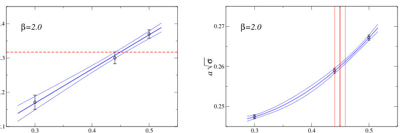
<figcaption class="paper-figure-caption"><b>Fig 1.</b> Figure 1. (left) Behavior of M gs 0−−/√σ as a function of µ for β = 2 (see Tab. 3). The blue band represents the one-standard-deviation uncertainty of the linear fit, while the horizontal dashed line indicates the value given in Eq. (3.3). (right) Behavior of a√σ as a function of µ for β = 2 (see Tab. 8). The blue band represents the one-standard-deviation uncertainty of the quadratic fit, while the vertical red band indicates the value µ(β) obtained by imposing Eq. (3.3).</figcaption>
</figure>
<figure class="paper-figure-card">
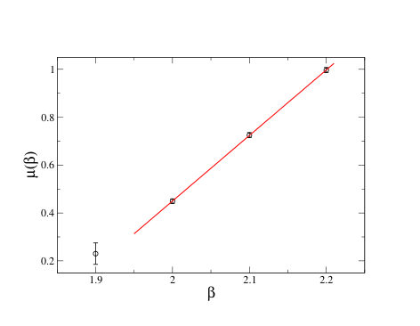
<figcaption class="paper-figure-caption"><b>Fig 2.</b> Figure 2. Behavior of µ(β) as a function of β along the line of constant physics. The solid line shows a linear fit to the three largest-β data points.</figcaption>
</figure>
<figure class="paper-figure-card">
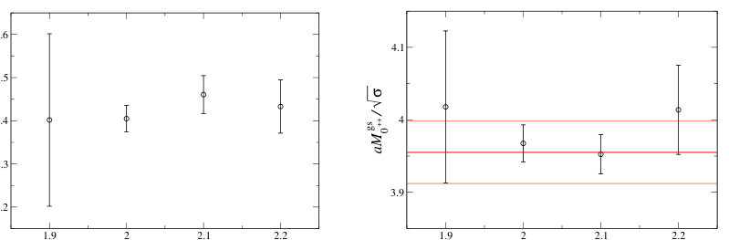
<figcaption class="paper-figure-caption"><b>Fig 3.</b> Figure 3. Behavior of the ratios M ex1 0−−/√σ (left) and M gs 0++/√σ (right) as a function of β along the line of constant physics. In the right panel the horizontal band denotes the value of M gs 0++/√σ estimated in [27] for µ = 0 and β = 1.8, see Eq. (3.2).</figcaption>
</figure>
<figure class="paper-figure-card">
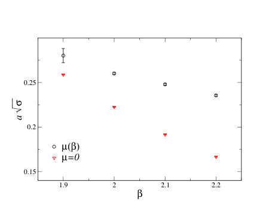
<figcaption class="paper-figure-caption"><b>Fig 4.</b> Figure 4. Behavior of the string tension in lattice units as a function of β along the line of constant physics. For comparison we also report the results for µ = 0 obtained in [27].</figcaption>
</figure>
</div>

<p><strong>Summary.</strong> This paper addresses the pathological continuum limit of 3D U(1) lattice gauge theory by modifying the standard action to include a term dependent on lattice monopoles. By tuning two parameters ($eta$ and $\mu$) along a specific trajectory, the authors demonstrate that a physically meaningful constant ratio between glueball mass and string tension can be maintained. This suggests a viable regularization scheme for the theory.</p>
<p><strong>Why it may be interesting.</strong> While focused on gauge theory, the concept of finding a 'line of constant physics' by tuning parameters to regularize a pathological limit is a general concept in critical phenomena and phase transitions relevant to statistical mechanics.</p>
<details>
<summary>Detailed structure</summary>
<p><strong>Main problem.</strong> The continuum limit of the three-dimensional compact U(1) lattice gauge theory is pathological because the ratio of glueball masses to the square root of the string tension vanishes.</p>
<p><strong>Main result.</strong> By modifying the lattice action to couple to the total number of lattice monopoles, the authors found a line of constant physics where this ratio remains constant, suggesting a physically well-behaved continuum limit.</p>
<p><strong>Method.</strong> The authors modified the Wilson action by adding a term proportional to the monopole number and tuned two parameters ($eta$ and $\mu$) simultaneously to trace this line of constant physics.</p>
<p><strong>Model / system.</strong> The system is the three-dimensional compact U(1) lattice gauge theory. The model is the standard Wilson action extended by a term coupling to the total number of lattice monopoles, $S = -eta \sum 	ext{Re} P - \mu N_m$.</p>
<p><strong>Key observables.</strong> Glueball masses ($m_0$), string tension ($\sqrt{\sigma}$), and the ratio $m_0/\sqrt{\sigma}$.</p>
<p><strong>Important parameters / regimes.</strong> Lattice coupling $eta$, monopole coupling $\mu$, and the continuum limit ($eta 	o \infty$).</p>
<p><strong>Assumptions / limitations.</strong> The analysis relies on the dilute monopole gas approximation, although the results suggest this approximation might be circumvented by the bounded nature of lattice monopole charges.</p>
<p><strong>Figures summary.</strong> Not specified.</p>
<p><strong>Paper structure.</strong> The paper first identifies the pathology of the standard continuum limit. It then introduces the modified action and demonstrates that tuning $eta$ and $\mu$ along a specific trajectory keeps the ratio $m_0/\sqrt{\sigma}$ constant, suggesting a regularization.</p>
</details>
<details>
<summary>Abstract</summary>
<p>In three-dimensional compact U(1) lattice gauge theory color confinement can be understood analytically through the dynamics of magnetic monopoles. However, its continuum limit is pathological, since the ratio of the glueball masses to the square root of the string tension vanishes as the continuum limit is approached. We investigate a simple extension of the Wilson action in which the total number of lattice monopoles is coupled to an additional parameter $μ$. By tuning $β$ and $μ$ simultaneously, we identify a line of constant physics along which the ratio of the lightest glueball mass to the square root of the string tension remains constant. We further show that the same scaling is satisfied, within numerical uncertainties, by the other low-lying glueball masses considered in this work. Along this trajectory, the string tension in lattice units decreases with increasing $β$, thus suggesting that the modified lattice action may provide a regularization of three-dimensional compact U(1) gauge theory with a physically well-behaved continuum limit.</p>
</details>
<p><sub><a href="#top">↑ back to top</a></sub></p>

<p><a id="paper-2608.28235"></a></p>
<h3 id="direct-adaptive-certification-of-high-dimensional-entanglement-with-bell-tests"><a href="http://arxiv.org/abs/2608.28235v1">Direct Adaptive Certification of High-Dimensional Entanglement with Bell Tests</a></h3>
<p><strong>Authors:</strong> Xu Kang Tan, Jesvita Menezes, Sanjan D. Murthy, Adetunmise C. Dada<br>
<strong>Type:</strong> theory · <strong>Category:</strong> quantum information and computing · <strong>PDF:</strong> <a href="https://arxiv.org/pdf/2608.28235v1">https://arxiv.org/pdf/2608.28235v1</a><br>
<strong>Analysis basis:</strong> full PDF text, analyzed in chunks
<strong>Topic relevance:</strong> <code>quantum measurements</code> <strong>2/5</strong></p>
<div class="figure-strip-hint">↔ Scroll figures horizontally</div>
<div class="paper-figures-scroll">
<figure class="paper-figure-card">
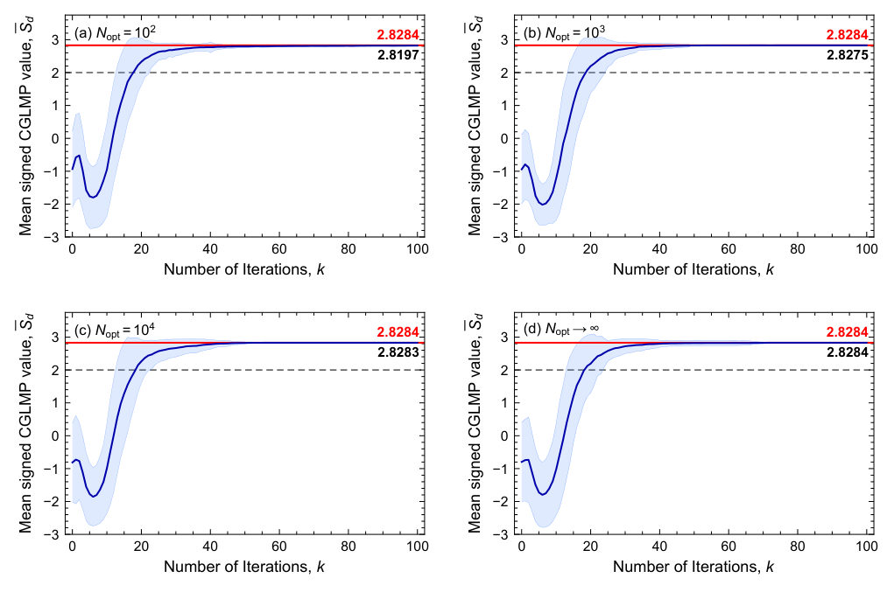
<figcaption class="paper-figure-caption"><b>Fig 1.</b> FIG. 1. Per-update CSPSA convergence for a maximally entangled qubit pair at four optimisation photon budgets: (a) Nopt = 100, (b) Nopt = 1000, (c) Nopt = 10000 detected pairs per joint setting, and (d) the noiseless Nopt →∞reference. Each panel contains 100 independently seeded K = 100 trajectories. At each iteration, the dark-blue curve is the mean of the 100 exact central simulation values S2(θk). The pale-blue band shows how those values vary around the mean: its lower and upper edges, marked by fine blue lines, lie one between-run sample standard deviation below and above the mean. It is therefore not an estimator error bar or a confidence interval for one Bell measurement. Each...</figcaption>
</figure>
<figure class="paper-figure-card">
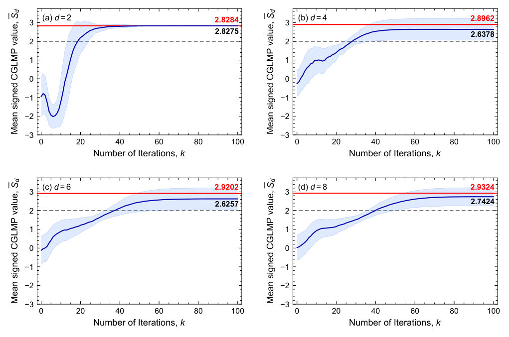
<figcaption class="paper-figure-caption"><b>Fig 2.</b> FIG. 2. Per-update phase-only CSPSA convergence for maximally entangled inputs at Nopt = 1000 detected pairs per joint setting: (a) d = 2, (b) d = 4, (c) d = 6, and (d) d = 8. Each panel contains 100 independently seeded trajectories from the initial setting through K = 100. At each iteration, the dark-blue curve is the mean of the 100 exact signed central simulation values Sd(θk). The pale-blue again band shows how those values vary around the mean: its lower and upper edges, marked by fine blue lines, lie one between-run sample standard deviation below and above the mean. It is therefore not an estimator error bar or a confidence interval for one Bell measurement. The grey dashed line is...</figcaption>
</figure>
<figure class="paper-figure-card">
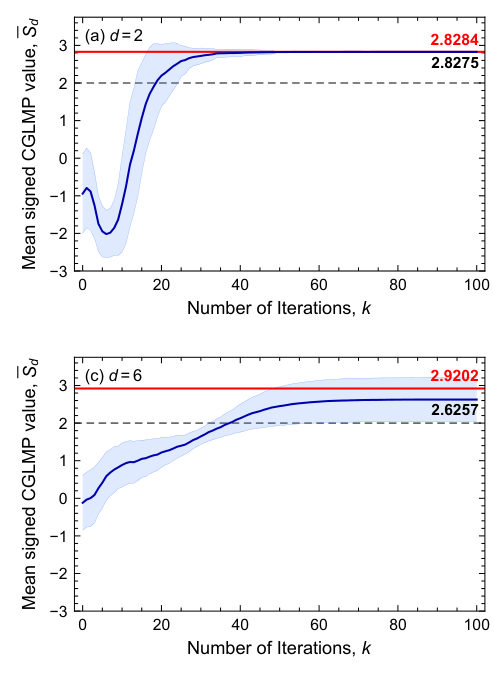
<figcaption class="paper-figure-caption"><b>Fig 3.</b> Figure 4 condenses the same trajectories into an early- versus-final comparison. At k = 10 the four representative dimensions remain far from the standard-Fourier refer- ence. By k = 100, however, every median lies within 0.17% of that reference. The all-run means at d = 4, 6, 8 remain lower because 16%, 20% and 13% of the respec- tive ensembles occupy the lower stationary branch. Thus the median records the typical upper-basin trajectory, whereas the mean retains the operationally important cost of failed basin entry.</figcaption>
</figure>
<figure class="paper-figure-card">
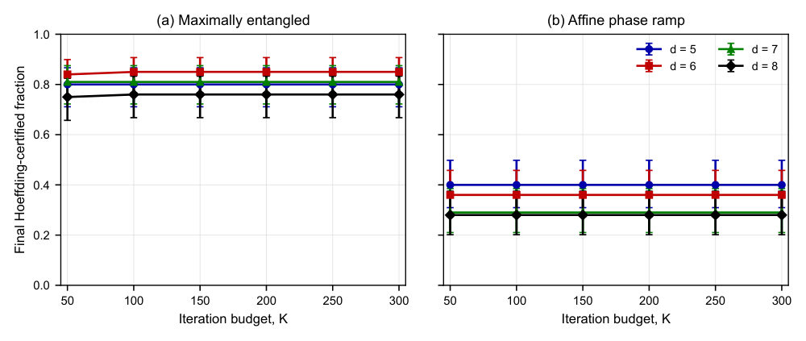
<figcaption class="paper-figure-caption"><b>Fig 4.</b> FIG. 3. Final Bell-test certification rates at alternative iteration budgets for the high-dimensional scan d = 5, . . . , 8. Panel (a) shows maximally entangled inputs, and panel (b) shows maximally entangled inputs with a randomly chosen affine phase ramp. Colour and marker jointly identify the dimension. Points show the observed fraction from 100 trajectories and bars are pointwise Wilson 95% intervals. Each K ∈{50, 100, 150, 200, 250, 300} is costed as an alternative terminal design with a fresh Ncert = 10000 acquisition; certificate data are not accumulated across K. Because successive values use prefixes of the same trajectories, values at different K within a panel are correlated. The...</figcaption>
</figure>
<figure class="paper-figure-card">
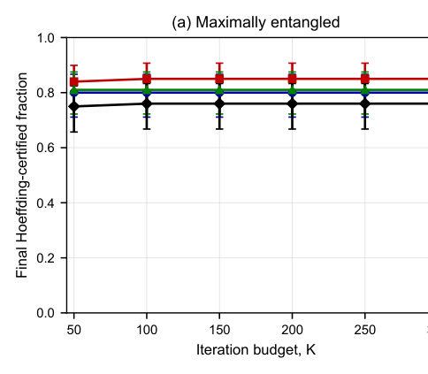
<figcaption class="paper-figure-caption"><b>Fig 5.</b> Figure 5 shows that, for the three studied input-families, the unchanged protocol remains effective for maximally en- tangled reference inputs through d = 8, while the observed affine-versus-independent contrast exposes the model ca- pacity of four adjustable offsets. The dip in the maximally entangled certified rate at d = 3 reflects 26 of the 100 qutrit trials ending in a lower optimisation basin, rather than any change in the direct protocol’s detected-pair allocation.</figcaption>
</figure>
</div>

<p><strong>Summary.</strong> This paper introduces a novel, adaptive Bell-test protocol to certify high-dimensional entanglement in unknown quantum states. By extending CSPSA to use the CGLMP inequality, the authors bypass the need for full quantum state tomography. The method successfully demonstrates certified entanglement violations up to $d=8$ while showing superior resource scaling compared to traditional characterization techniques.</p>
<p><strong>Why it may be interesting.</strong> This work provides a powerful, resource-efficient alternative to full state tomography for verifying entanglement in complex, high-dimensional quantum systems, which is crucial for scalable quantum communication protocols.</p>
<details>
<summary>Detailed structure</summary>
<p><strong>Main problem.</strong> The paper addresses the challenge of characterizing high-dimensional entanglement in unknown quantum states, which is resource-intensive using standard quantum state tomography (QST).</p>
<p><strong>Main result.</strong> They successfully developed and demonstrated an adaptive Bell-test protocol that certifies entanglement in high-dimensional qudits ($d=2$ to $d=8$) without needing to reconstruct the full density matrix.</p>
<p><strong>Method.</strong> The method extends Complex Simultaneous Perturbation Stochastic Approximation (CSPSA) to utilize the Collins-Gisin-Linden-Massar-Popescu (CGLMP) inequality for bipartite qudits, allowing for direct, adaptive violation testing.</p>
<p><strong>Model / system.</strong> The system involves bipartite qudits (high-dimensional quantum systems) whose entanglement is tested using the CGLMP inequality. The analysis considers both pure and mixed states, including isotropic mixed states.</p>
<p><strong>Key observables.</strong> The primary observable is the CGLMP parameter ($S_d$), where a violation ($S_d > 2$) certifies non-local correlations. Other diagnostics include the one-sided lower confidence bound ($S_L^d$).</p>
<p><strong>Important parameters / regimes.</strong> The dimension of the qudits ($d$), the visibility of the mixed state, and the number of optimization iterations/runs are key parameters.</p>
<p><strong>Assumptions / limitations.</strong> The method assumes that the measurement-setting cost for each CSPSA iteration is independent of the dimension $d$. The certification relies on a one-sided confidence bound derived from Hoeffding's inequality.</p>
<p><strong>Figures summary.</strong> Figures compare the resource costs (measurement configurations vs. detected pairs) between the proposed adaptive Bell search and Quantum State Tomography (QST) across different dimensions.</p>
<p><strong>Paper structure.</strong> The paper introduces the problem, details the extension of CSPSA to high-dimensional Bell testing using the CGLMP inequality, presents the statistical framework for confidence-certified violation, and concludes with numerical demonstrations comparing its efficiency against QST.</p>
</details>
<details>
<summary>Abstract</summary>
<p>Entangled photons play a crucial role in quantum applications, and determining and characterising their entanglement is vital to using them effectively. High-dimensional entangled states offer richer possibilities, but their additional measurement degrees of freedom make them increasingly demanding to characterise. However, adaptive Bell-test methods based on complex simultaneous perturbation stochastic approximation (CSPSA) have so far focused mainly on qubits. Here we numerically investigate a Bell-inequality-violation-based method for detecting entanglement in unknown quantum states. We extend CSPSA to high-dimensional Bell testing by using the Collins-Gisin-Linden-Massar-Popescu (CGLMP) inequality for bipartite qudits. The resulting protocol can detect Bell-nonlocal correlations in unknown entangled states, whether pure or mixed, without first reconstructing their density matrix. Using 100 optimisation iterations in each of 100 independent finite-shot runs per number of dimensions d, we demonstrate certified CGLMP violations throughout d=2-8. For isotropic mixed states tested at a visibility of just 0.05 above the standard-Fourier violation threshold, we likewise observe confidence-certified CGLMP violations throughout the range of d studied. We compare this direct stochastic approach with quantum state tomography, the standard method for characterising an unknown state. In the matched benchmark, CSPSA uses fewer measurement configurations per attempt from d=6, whereas tomography requires fewer detected pairs per certified result through d=8. We also derive the phase dependence of the CGLMP parameter and clarify the features of its landscape that govern the adaptive search. Because the measurement-setting cost of each CSPSA iteration is independent of dimension, the method offers a particularly attractive route to the certification of high-dimensional entanglement.</p>
</details>
<p><sub><a href="#top">↑ back to top</a></sub></p>

<p><a id="paper-2608.27656"></a></p>
<h3 id="adaptive-workforce-exploration-in-complex-productivity-landscapes"><a href="http://arxiv.org/abs/2608.27656v1">Adaptive workforce exploration in complex productivity landscapes</a></h3>
<p><strong>Authors:</strong> Mateus F. B. Granha, Igor V. G. de Oliveira, André L. M. Vilela, Chao Wang, Paulo R. A. Campos<br>
<strong>Type:</strong> theory · <strong>Category:</strong> statistical mechanics · <strong>PDF:</strong> <a href="https://arxiv.org/pdf/2608.27656v1">https://arxiv.org/pdf/2608.27656v1</a><br>
<strong>Analysis basis:</strong> full PDF text, analyzed in chunks
<strong>Topic relevance:</strong> <code>Frenkel-Kontorova</code> <strong>1/5</strong> · <code>Keldysh / 2PI / non-Gaussian methods</code> <strong>1/5</strong> · <code>analog quantum simulation</code> <strong>1/5</strong> · <code>driven-dissipative phase transition</code> <strong>1/5</strong> · <code>methods for driven-dissipative</code> <strong>1/5</strong> · <code>non-equilibrium universality</code> <strong>1/5</strong></p>
<div class="figure-strip-hint">↔ Scroll figures horizontally</div>
<div class="paper-figures-scroll">
<figure class="paper-figure-card">
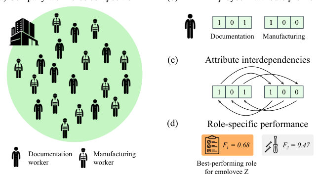
<figcaption class="paper-figure-caption"><b>Fig 1.</b> Figure 1. Illustration of a company comprised of two departments: documentation and manufacturing. (a) Company workforce composition comprising 20 employees. (b) Visual representation of the trait structure of employee Z, where each task associated with a department has three attributes that the employee may or may not have, totaling N = 6 attributes per employee. (c) Arrows indicate interdependency between these attributes. In this example, there are no internal interdependencies kin = 0 and each attribute depends on one attribute of another task, kout = 1. (d) In this case, the first task has the highest performance (fitness). Hence, we highlight documentation as the best-performing task...</figcaption>
</figure>
<figure class="paper-figure-card">
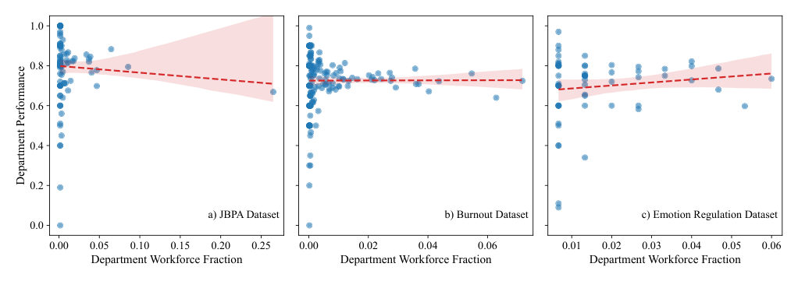
<figcaption class="paper-figure-caption"><b>Fig 2.</b> Figure 2. Relationship between department workforce fraction and normalized department performance across three empirical public sector datasets: a) JBPA Dataset, b) Burnout Dataset, and c) Emotion Regulation Dataset. Dashed red lines represent fitted linear regression models accompanied by 95% confidence intervals (shaded regions). The linear regressions are nearly flat across all panels, indicating that department size is not significantly correlated with performance measures.</figcaption>
</figure>
<figure class="paper-figure-card">

<figcaption class="paper-figure-caption"><b>Fig 3.</b> Figure 3. Schematic representation of the organizational search and adaptation process for two roles. Employee shape identifies the role performed, with the two shapes representing the two available roles, whereas color indicates workforce strategy: blue represents specialists and orange represents generalists. (a) Candidate workforce designs differ in their employee compositions and attribute profiles. (b) Each design is evaluated according to its organizational productivity, which depends on workforce allocation, which is a function of θ, market demand β, and the generalist cost ε. Designs are selected with probabilities proportional to their productivity, as illustrated by the selection...</figcaption>
</figure>
<figure class="paper-figure-card">

<figcaption class="paper-figure-caption"><b>Fig 4.</b> Figure 4(a) displays the number of local optima, ρmax, as a function of kout for several values of kin. The results show a pronounced increase in ρmax with both within-task and cross- task interdependencies. For fixed kin, increasing kout produces a rapid growth in the number of local optima, indicating that stronger coupling between tasks substantially increases the ruggedness of the performance landscape. Likewise, larger values of kin systematically shift the curves upward, reflecting the additional complexity generated by interactions among attributes associated with the same task. Consequently, highly interdependent organizational structures give rise to a larger number of locally...</figcaption>
</figure>
<figure class="paper-figure-card">
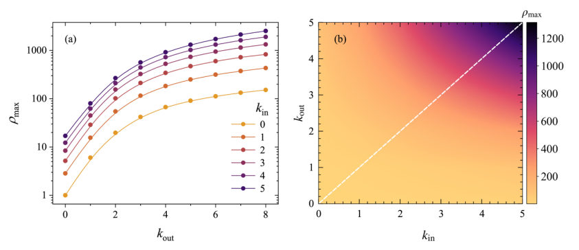
<figcaption class="paper-figure-caption"><b>Fig 5.</b> Figure 4. Number of local maxima ρmax of the productivity landscape as a function of the interdependency parameter k between task attributes. In (a), we present the number of local maxima of the complex landscape versus kout. In (b), we display a heatmap of ρmax as a funcion of kin and kout. As k increases, the ruggedness and complexity of the productivity landscape increase, making it more challenging for organizations to find an optimal division of labor. The lines are guides to the eye. In (b), the dashed line is just a reference line for kin = kout.</figcaption>
</figure>
</div>

<p><strong>Summary.</strong> This work models organizational efficiency by treating task allocation as an evolutionary process on a rugged fitness landscape, inspired by the NK model. It analyzes the trade-off between specialized and generalist labor forces to determine optimal strategies for maximizing productivity. The findings offer mathematical insights into how system complexity and interdependencies drive adaptive organizational change.</p>
<p><strong>Why it may be interesting.</strong> While focused on socioeconomics, the underlying mathematical machinery—using fitness landscapes, group selection, and adaptive dynamics—is directly analogous to models used in non-equilibrium statistical mechanics and complex systems.</p>
<details>
<summary>Detailed structure</summary>
<p><strong>Main problem.</strong> The paper investigates how the organizational division of labor and task interdependencies affect overall productivity and the capacity for adaptation in complex systems.</p>
<p><strong>Main result.</strong> The model reveals the emergence of nonlinear adaptive dynamics, providing insights into how companies can adapt their strategies and foster innovation by optimizing labor division.</p>
<p><strong>Method.</strong> The study employs group selection algorithms applied to a modified NK model, which simulates fitness landscapes shaped by task interdependencies.</p>
<p><strong>Model / system.</strong> The model uses an NK-inspired framework applied to organizational structure, distinguishing between 'specialists' (fixed tasks) and 'generalists' (stochastic task selection). Productivity is optimized by balancing these two workforce types against task interdependencies.</p>
<p><strong>Key observables.</strong> Organizational productivity, deviation from optimal labor division, and the emergence of nonlinear adaptive dynamics.</p>
<p><strong>Important parameters / regimes.</strong> Ruggedness of the productivity landscape (related to task interdependency), generalization threshold ($ heta$), and the exploration rate ($\mu$).</p>
<p><strong>Assumptions / limitations.</strong> The analysis often reduces to a minimal two-role setting for tractability, and empirical data suggests department size alone is not the primary predictor of performance.</p>
<p><strong>Figures summary.</strong> Figure 1 illustrates employee attribute profiles and interdependencies in a company setting. Figure 2 shows department workforce fraction vs. normalized performance across empirical datasets.</p>
<p><strong>Paper structure.</strong> The paper builds from an initial conceptual model (NK landscape applied to labor) to a detailed mathematical framework involving task allocation (specialist/generalist classification) and group selection evolution, with extensions proposed for dynamic market demands.</p>
</details>
<details>
<summary>Abstract</summary>
<p>Specialization and task allocation enhance efficiency and innovation across diverse systems, from biological organisms to socioeconomic institutions. The evolution of task distribution and its influence on organizational productivity encapsulate the dynamics between task dependencies and adaptive strategies. We explore the organizational division of labor, inspired by the NK model of rugged landscapes, which is widely applied in evolutionary biology, and incorporate interdependencies among the attributes of technical experts within an organization. Our model considers two types of employees characterized by their task allocation strategies: specialists, who are permanently assigned to a single task, and generalists, who stochastically select a task at each time step. We investigate how the ruggedness of the productivity landscape, shaped by task interdependency, affects the organization's capacity to optimize labor division and meet market demands. Using group selection algorithms, we reveal the emergence of nonlinear adaptive dynamics, providing insights into how companies can adapt their strategies to meet market demands and foster innovation.</p>
</details>
<p><sub><a href="#top">↑ back to top</a></sub></p>

<p><a id="paper-2608.28261"></a></p>
<h3 id="quantum-many-body-effects-in-the-optical-response-of-ideal-thin-films"><a href="http://arxiv.org/abs/2608.28261v1">Quantum many-body effects in the optical response of ideal thin films</a></h3>
<p><strong>Authors:</strong> David Trejo-Garcia, Tapio T. Rantala, Marco Ornigotti, Juha Tiihonen<br>
<strong>Type:</strong> theory · <strong>Category:</strong> strongly correlated electrons · <strong>PDF:</strong> <a href="https://arxiv.org/pdf/2608.28261v1">https://arxiv.org/pdf/2608.28261v1</a><br>
<strong>Analysis basis:</strong> full PDF text, analyzed in chunks
<strong>Topic relevance:</strong> <code>Keldysh / 2PI / non-Gaussian methods</code> <strong>1/5</strong> · <code>analog quantum simulation</code> <strong>1/5</strong> · <code>methods for driven-dissipative</code> <strong>1/5</strong></p>
<div class="figure-strip-hint">↔ Scroll figures horizontally</div>
<div class="paper-figures-scroll">
<figure class="paper-figure-card">
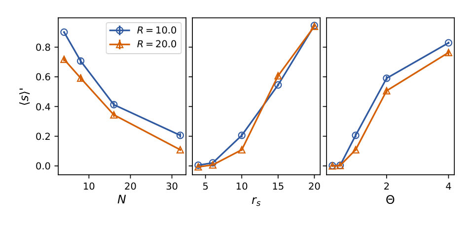
<figcaption class="paper-figure-caption"><b>Fig 1.</b> FIG. 1. Plots of the average sign ⟨s⟩′ of spin-unpolarized simulation versus simulation parameters</figcaption>
</figure>
<figure class="paper-figure-card">
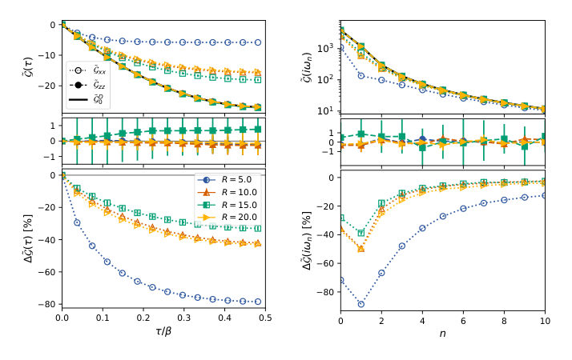
<figcaption class="paper-figure-caption"><b>Fig 2.</b> FIG. 2. Plots of the periodic (zz) and confined (xx) components of the imaginary-time dipole</figcaption>
</figure>
<figure class="paper-figure-card">
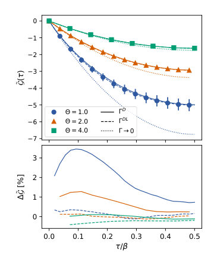
<figcaption class="paper-figure-caption"><b>Fig 3.</b> FIG. 3. (top) The dipole autocorrelation function ˜G(τ) from PIMC (markers, no line) at variable</figcaption>
</figure>
<figure class="paper-figure-card">
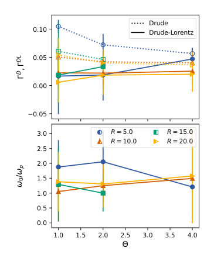
<figcaption class="paper-figure-caption"><b>Fig 4.</b> FIG. 4. Least-squares fitted Drude ΓD and Drude–Lorentz ΓD (top) and ω0 (bottom) at various</figcaption>
</figure>
<figure class="paper-figure-card">
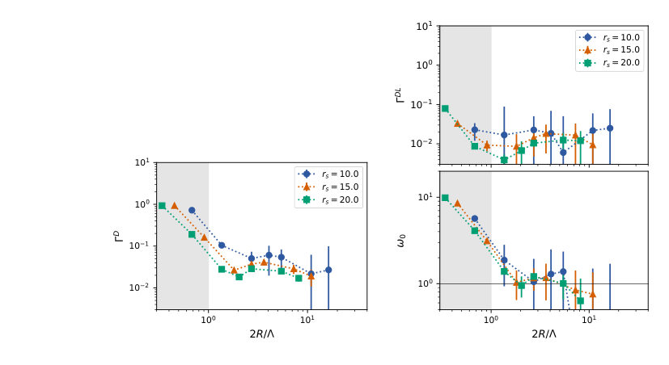
<figcaption class="paper-figure-caption"><b>Fig 5.</b> FIG. 5. The effective Drude scattering ΓD (left) and Drude–Lorentz parameters ΓDL and ω0 versus</figcaption>
</figure>
</div>

<p><strong>Summary.</strong> This paper uses Path-integral Monte Carlo simulations to study how confining electrons in thin slabs affects their optical response. It demonstrates that the boundaries break the ideal Drude behavior, leading to measurable scattering effects quantified by fitting the response to Drude and Drude-Lorentz models. The findings are important for understanding charge transport in nanoscale quantum materials.</p>
<p><strong>Why it may be interesting.</strong> This work provides a rigorous, first-principles simulation of how geometric confinement and quantum statistics modify fundamental optical properties, which is crucial for designing nanoscale electronic devices.</p>
<details>
<summary>Detailed structure</summary>
<p><strong>Main problem.</strong> The study investigates quantum many-body effects on the long-wavelength optical response of confined electrons at finite temperatures.</p>
<p><strong>Main result.</strong> Slab confinement significantly breaks down the ideal Drude response, causing measurable scattering effects, particularly in the out-of-plane optical susceptibility.</p>
<p><strong>Method.</strong> The authors employ the Path-integral Monte Carlo (PIMC) method to simulate the system's dynamics and analyze the optical response via the imaginary-time dipole autocorrelation function.</p>
<p><strong>Model / system.</strong> The system modeled is an ideal homogeneous electron gas (HEG) confined within a quasi-2D slab geometry, allowing for the study of boundary effects on electron interactions.</p>
<p><strong>Key observables.</strong> Optical susceptibility $\chi(\omega)$, the imaginary-time dipole autocorrelation function $   ilde{G}(    au)$, and fitted parameters for the Drude ($\Gamma_D$) and Drude-Lorentz ($\Gamma_{DL}, \omega_0$) models.</p>
<p><strong>Important parameters / regimes.</strong> Slab thickness ($2R$), particle density ($r_s$), finite temperature ($\Theta$), and the ratio of confinement size to thermal wavelength ($2R/\Lambda$).</p>
<p><strong>Assumptions / limitations.</strong> The analysis relies on fitting the PIMC data to Drude/Drude-Lorentz models for analytic continuation, and the PIMC method itself is limited by the Fermion sign problem.</p>
<p><strong>Figures summary.</strong> Figures illustrate the dependence of fitted parameters ($\Gamma_D, \Gamma_{DL}, \omega_0$) on slab thickness relative to thermal wavelength and density, and compare results between fermionic and classical (Boltzmannon) simulations.</p>
<p><strong>Paper structure.</strong> The paper establishes the problem by noting the breakdown of the ideal Drude response due to confinement. It details the PIMC methodology for calculating the optical response, presents quantitative results by fitting the imaginary-time correlation function to established models, and concludes by comparing the effects of quantum statistics and geometry.</p>
</details>
<details>
<summary>Abstract</summary>
<p>We study quantum many-body effects in the long-wavelength optical response of confined electrons at finite temperatures. We simulate homogeneous electron gas confined in one dimension into a slab of nanoscale thickness. We demonstrate how the slab boundaries break down the ideal Drude response of free charge carriers, giving rise to scattering effects due to both the surfaces and quantum many-body interactions. We use a recent path-integral Monte Carlo (PIMC) approach developed in [Tiihonen et al. Phys. Rev. A 113, 053711] to quantify these effects in high accuracy. We perform phenomenological fits to Drude and Drude-Lorentz models parameters, manifesting various trends of the optical response with physical parameters like density and temperature, and numerical effects like finite size and the quantum statistics.</p>
</details>
<p><sub><a href="#top">↑ back to top</a></sub></p>

<p><a id="paper-2608.27938"></a></p>
<h3 id="the-thermodynamic-freedom-of-a-thermodynamic-computer"><a href="http://arxiv.org/abs/2608.27938v1">The thermodynamic freedom of a thermodynamic computer</a></h3>
<p><strong>Authors:</strong> Stephen Whitelam<br>
<strong>Type:</strong> theory · <strong>Category:</strong> statistical mechanics · <strong>PDF:</strong> <a href="https://arxiv.org/pdf/2608.27938v1">https://arxiv.org/pdf/2608.27938v1</a><br>
<strong>Analysis basis:</strong> full PDF text, analyzed in chunks
<strong>Topic relevance:</strong> <code>driven-dissipative phase transition</code> <strong>1/5</strong> · <code>non-equilibrium universality</code> <strong>1/5</strong> · <code>quantum measurements</code> <strong>1/5</strong></p>
<div class="figure-strip-hint">↔ Scroll figures horizontally</div>
<div class="paper-figures-scroll">
<figure class="paper-figure-card">
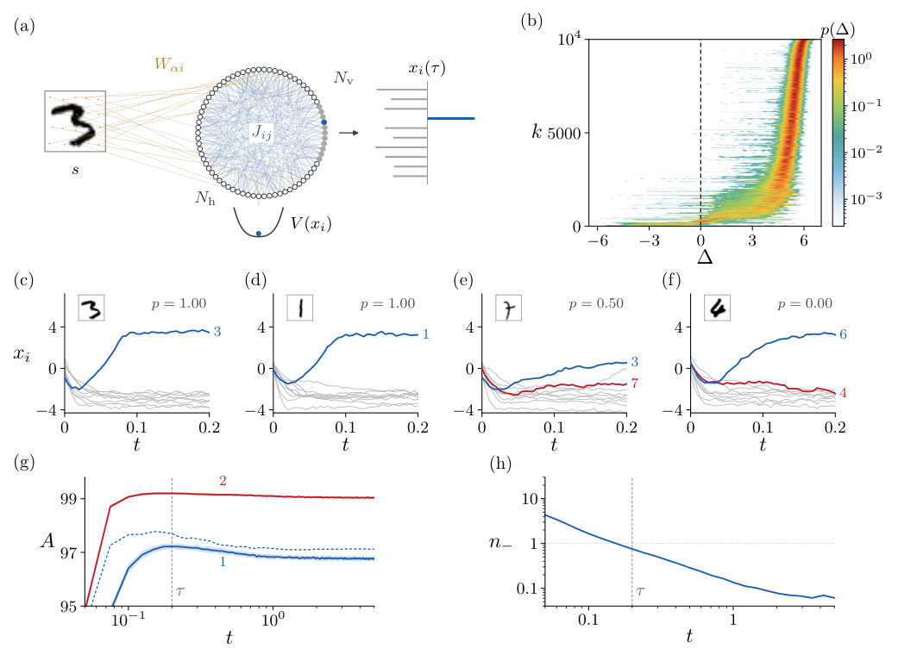
<figcaption class="paper-figure-caption"><b>Fig 1.</b> FIG. 1. Dynamics of inference of our model thermodynamic computer. (a) A 784-pixel MNIST image s is connected to the computer via the couplings Wαi. The N = 74 units of the computer xi (divided into Nh = 64 hidden and Nv = 10 visible units) interact via the potential (5), and evolve via the Langevin dynamics (1). The computer’s predicted class c corresponds to the output unit with the largest value xc(τ) at time t = τ = 1/5 (times are measured in units of µ−1). (b) Probability distribution of the classification gap ∆, Eq. (6), for all 104 test-set digits, calculated using 103 trajectories per digit. Classification is correct when ∆&gt; 0. The index k runs over the test images in order of...</figcaption>
</figure>
<figure class="paper-figure-card">
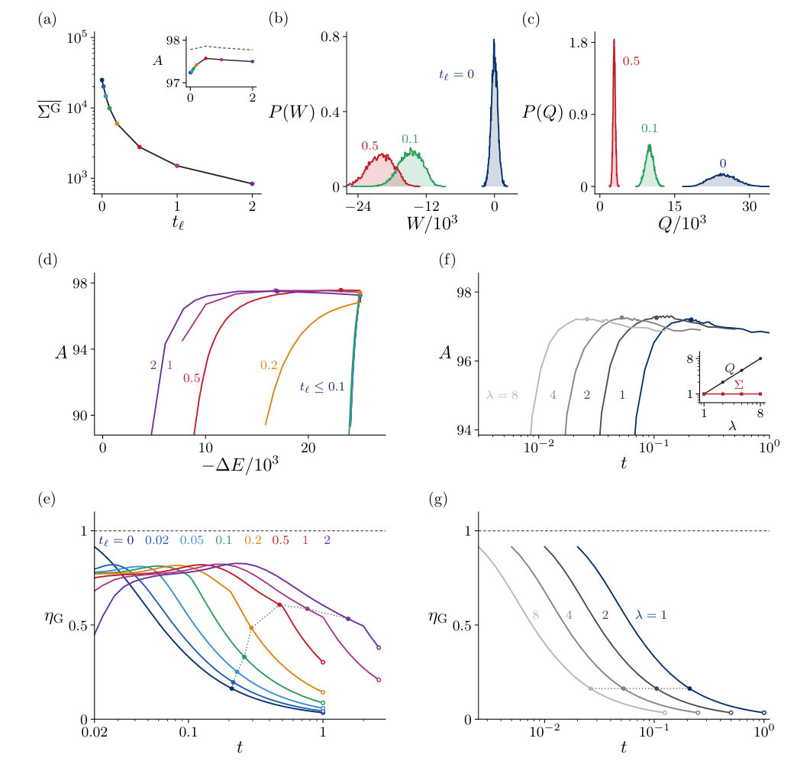
<figcaption class="paper-figure-caption"><b>Fig 2.</b> FIG. 2. Thermodynamics of inference. (a) Mean entropy-production estimate (at the most accurate readout time) as a function of loading time. Inset: the corresponding MNIST test-set classification accuracy, with the T = 0 result shown dashed. Colors denote the loading times tℓ= 0, 0.02, 0.05, 0.1, 0.2, 0.5, 1, and 2 (from left to right). (b,c) Distributions of work and heat (in units of kBT); colors denote tℓ= 0, 0.1, and 0.5. (d) Test-set accuracy as a function of the mean energy (in kBT) lost by the computer; colors denote the loading times listed in panel (a). (e) The efficiency bound ηG(t) under loading. Colors denote the loading times listed in panel (a), while dots indicate the readout...</figcaption>
</figure>
</div>

<p><strong>Summary.</strong> This work investigates the thermodynamic efficiency of a simulated quantum-like computer performing ML classification. By analyzing the system's dynamics under stochastic thermodynamics, the authors show that the computer can operate close to theoretical efficiency limits. The findings reveal that the operational protocols offer significant flexibility in balancing speed, accuracy, and energy dissipation.</p>
<p><strong>Why it may be interesting.</strong> It provides a concrete, non-quantum example of applying fundamental non-equilibrium thermodynamic bounds (like speed limits) to assess the computational limits of physical hardware, which has parallels in open quantum system dynamics.</p>
<details>
<summary>Detailed structure</summary>
<p><strong>Main problem.</strong> The paper assesses the thermodynamic efficiency of a simulated thermodynamic computer performing a machine-learning classification task.</p>
<p><strong>Main result.</strong> Different inference protocols allow the computer to operate near the thermodynamic efficiency limit without losing accuracy, indicating considerable operational freedom.</p>
<p><strong>Method.</strong> The study uses stochastic thermodynamics, specifically analyzing the Wasserstein speed limit and comparing it to the actual entropy production rate.</p>
<p><strong>Model / system.</strong> The system is a stochastic physical device modeled by an overdamped Langevin equation, trained to classify MNIST images using a potential energy function with multiple interaction terms.</p>
<p><strong>Key observables.</strong> Classification accuracy, $L_2$-Wasserstein distance ($W_2$), and thermodynamic efficiency ($\eta$).</p>
<p><strong>Important parameters / regimes.</strong> Thermal energy scale ($k_B T$), runtime ($  au$), and the loading rate ($\Gamma_\ell(t)$).</p>
<p><strong>Assumptions / limitations.</strong> The analysis relies on the Langevin equation approximation and uses Gaussian bounds for entropy production for practical calculations.</p>
<p><strong>Figures summary.</strong> Figures illustrate the time evolution of classification accuracy, showing a peak at $  au=1/5$, and compare efficiency bounds under different loading protocols and time rescalings ($\lambda$).</p>
<p><strong>Paper structure.</strong> The paper progresses by first establishing the basic performance metrics, then analyzing the effect of the loading protocol on efficiency, and finally examining the implications of the 'clock-acceleration procedure' on thermodynamic constraints.</p>
</details>
<details>
<summary>Abstract</summary>
<p>Thermodynamic computers are stochastic physical devices designed to perform calculations at the thermal energy scale. Their operation is constrained by the equations of stochastic thermodynamics, among which are a set of bounds, known as speed limits, that relate a thermodynamic computer's run time to its computational progress and the heat it dissipates. Using the Wasserstein speed limit we assess the thermodynamic efficiency of a simulation model of a thermodynamic computer trained to perform a standard machine-learning classification task. On this task the thermodynamic computer is as capable as a simple multilayer perceptron. We show that different inference protocols allow the computer to operate within 40\% of the thermodynamic limit of efficiency without loss of accuracy, or to perform inference increasingly rapidly at fixed accuracy and thermodynamic efficiency. These results indicate that a thermodynamic computer designed for a particular task retains considerable freedom in its thermodynamic operation.</p>
</details>
<p><sub><a href="#top">↑ back to top</a></sub></p>

<p><a id="paper-2608.28168"></a></p>
<h3 id="a-quantum-generative-model-for-in-silico-clinical-trials-using-scarce-training-datasets"><a href="http://arxiv.org/abs/2608.28168v1">A quantum generative model for in silico clinical trials using scarce training datasets</a></h3>
<p><strong>Authors:</strong> Olatz Sanz Larrarte, Reza Dastbasteh, Roberto Sanchez-Navarro, Maria Diez-Campelo, Felipe Prosper, Ana Alfonso-Pierola, Mikel Hernaez, Sara Capponi, Pedro Crespo Bofill, Josu Etxezarreta Martinez<br>
<strong>Type:</strong> both · <strong>Category:</strong> quantum information and computing · <strong>PDF:</strong> <a href="https://arxiv.org/pdf/2608.28168v1">https://arxiv.org/pdf/2608.28168v1</a><br>
<strong>Analysis basis:</strong> full PDF text, analyzed in chunks
<strong>Topic relevance:</strong> <code>QC/QI experiment</code> <strong>1/5</strong> · <code>methods for driven-dissipative</code> <strong>1/5</strong></p>
<div class="figure-strip-hint">↔ Scroll figures horizontally</div>
<div class="paper-figures-scroll">
<figure class="paper-figure-card">
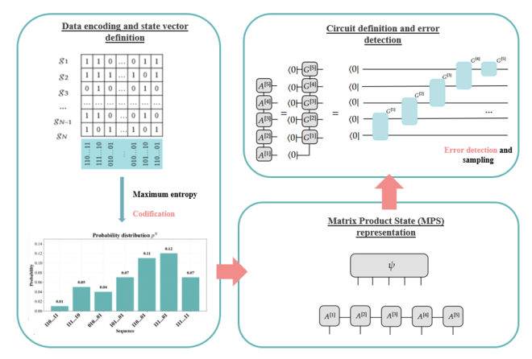
<figcaption class="paper-figure-caption"><b>Fig 1.</b> Figure 1: Schematic representation of the methodology for synthetic data generation: (a) data encoding and definition of the joint state vector, (b) MPS discretization of the state, and (c) mapping onto a quantum circuit for sampling.</figcaption>
</figure>
<figure class="paper-figure-card">
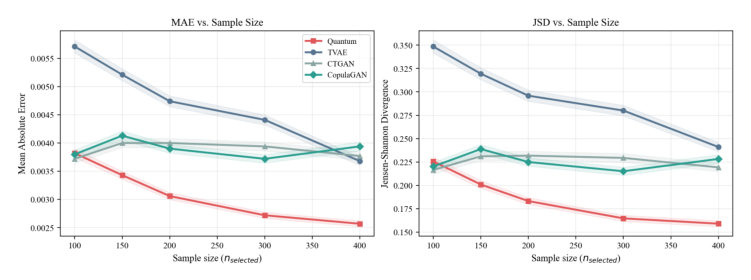
<figcaption class="paper-figure-caption"><b>Fig 2.</b> Figure 2: Comparison of the proposed quantum model with classical baselines in terms of MAE and Jensen–Shannon divergence as a function of sample size.</figcaption>
</figure>
<figure class="paper-figure-card">
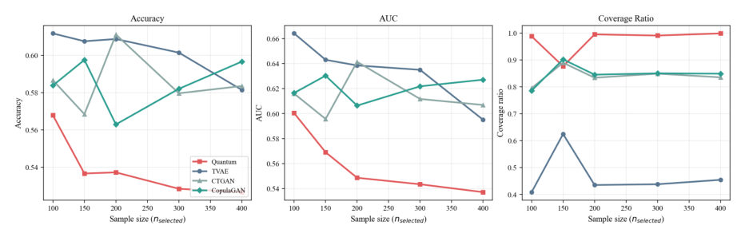
<figcaption class="paper-figure-caption"><b>Fig 3.</b> Figure 3: Comparison of the proposed quantum model with classical baselines in terms of classification accuracy, AUC, and coverage ratio as a function of sample size.</figcaption>
</figure>
<figure class="paper-figure-card">
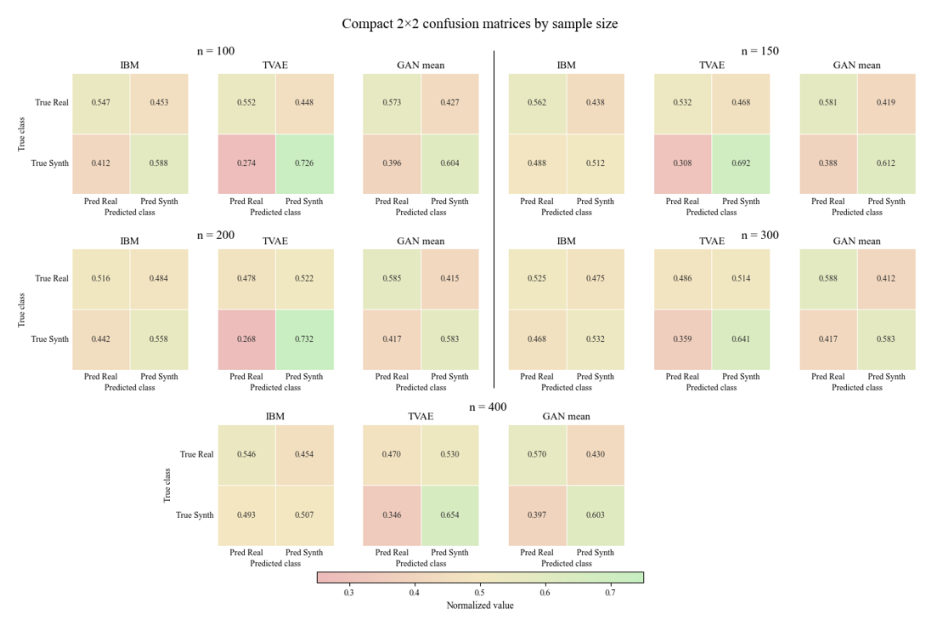
<figcaption class="paper-figure-caption"><b>Fig 4.</b> Figure 4: Row-normalized 2×2 confusion matrices of the Random Forest classifier for the pro- posed quantum model and classical baselines (aggregated GAN baseline obtained by averaging the row-normalized confusion matrices of CTGAN and CopulaGAN) across all sample sizes. Values close to 0.5 indicate near-random discrimination between real and synthetic samples, supporting higher indistinguishability.</figcaption>
</figure>
</div>

<p><strong>Summary.</strong> This paper introduces a quantum generative model designed to create realistic synthetic patient data for rare diseases where real data is scarce. It leverages quantum circuits, trained on maximum entropy principles, to model complex probability distributions. Results show this quantum approach outperforms established classical generative models in fidelity and expressivity metrics.</p>
<p><strong>Why it may be interesting.</strong> While the application is biomedical, the core methodology involves advanced quantum circuit design, state preparation (MPS), and benchmarking against classical ML models, which is highly relevant to quantum algorithm development for complex data distributions.</p>
<details>
<summary>Detailed structure</summary>
<p><strong>Main problem.</strong> The core problem is generating high-fidelity synthetic patient data for <em>in silico</em> clinical trials, especially when training datasets are scarce due to rare or heterogeneous diseases.</p>
<p><strong>Main result.</strong> The proposed quantum generative model surpasses classical generative models in both generalization and expressivity metrics, indicating its potential for generating high-fidelity patient data.</p>
<p><strong>Method.</strong> The authors propose a hybrid quantum-classical pipeline that maps the target joint probability distribution into a quantum circuit for sampling.</p>
<p><strong>Model / system.</strong> The model uses a quantum generative approach, encoding the joint probability distribution into a quantum state, compressing it via a Matrix Product State (MPS), and executing the resulting circuit on a superconducting quantum computer (IBM Heron r2).</p>
<p><strong>Key observables.</strong> Generalization metrics include Mean Absolute Error (MAE) and Jensen–Shannon Divergence (JSD); expressivity is measured by Random Forest classification accuracy, AUC, and Coverage Ratio.</p>
<p><strong>Important parameters / regimes.</strong> The study tests performance across varying subsample sizes ($n_{	ext{selected}} \in \{100, 150, 200, 300, 400\}$) of the scarce data.</p>
<p><strong>Assumptions / limitations.</strong> The primary limitations are the current noise levels and limited qubit counts of quantum devices, necessitating error-detection and post-selection steps.</p>
<p><strong>Figures summary.</strong> Figures compare MAE/JSD and Accuracy/AUC vs. sample size, showing the quantum model's consistent superiority over classical baselines. Figure 4 displays confusion matrices confirming the quantum model's difficulty in distinguishing real from synthetic samples.</p>
<p><strong>Paper structure.</strong> The paper introduces the problem of data scarcity in clinical trials, details the quantum generative pipeline (encoding via MPS, circuit mapping), compares performance against classical GANs/VAEs using multiple metrics, and concludes with empirical results demonstrating quantum superiority.</p>
</details>
<details>
<summary>Abstract</summary>
<p>In silico methods have emerged as a strategy to complement clinical trials. These are particularly relevant for rare or heterogeneous diseases for which traditional methods are costly or difficult to apply. While classical generative models have shown an extremely good ability to generate high fidelity data when trained using extensive databases, they often struggle when the available samples for training are scarce. In this work, we leverage the potential of quantum computers to represent complex probability distributions to generate high fidelity in silico patients. We propose a pipeline able to combine asymmetric databases into a quantum circuit that serves as a quantum generative model. We evaluate the efficacy of our proposal using a database of Myelodysplastic Syndrome (MDS) patients with 7 clinical variables as a proof-of-concept. We executed our quantum generative model in the IBM Heron r2 ``ibm_basquecountry'' superconducting quantum computer and compare our method with well known classical baselines. Our results show that the quantum generative model surpasses the classical generative models in generalization and expressivity metrics, indicating its potential validity to generate high fidelity in silico patients for clinical trials.</p>
</details>
<p><sub><a href="#top">↑ back to top</a></sub></p>

<p><a id="paper-2608.28057"></a></p>
<h3 id="quantum-computation-of-partonic-drell-yan-scattering-cross-sections-and-interference-effects"><a href="http://arxiv.org/abs/2608.28057v1">Quantum computation of partonic Drell-Yan scattering cross sections and interference effects</a></h3>
<p><strong>Authors:</strong> Erik Bashore, Stefano Moretti, Timea Vitos<br>
<strong>Type:</strong> theory · <strong>Category:</strong> quantum information and computing · <strong>PDF:</strong> <a href="https://arxiv.org/pdf/2608.28057v1">https://arxiv.org/pdf/2608.28057v1</a><br>
<strong>Analysis basis:</strong> full PDF text, analyzed in chunks
<strong>Topic relevance:</strong> <code>Keldysh / 2PI / non-Gaussian methods</code> <strong>1/5</strong> · <code>interference shaping light</code> <strong>1/5</strong></p>
<div class="figure-strip-hint">↔ Scroll figures horizontally</div>
<div class="paper-figures-scroll">
<figure class="paper-figure-card">
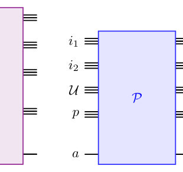
<figcaption class="paper-figure-caption"><b>Fig 1.</b> Figure 1: Circuit diagram representations of the primary quantum gates.</figcaption>
</figure>
<figure class="paper-figure-card">
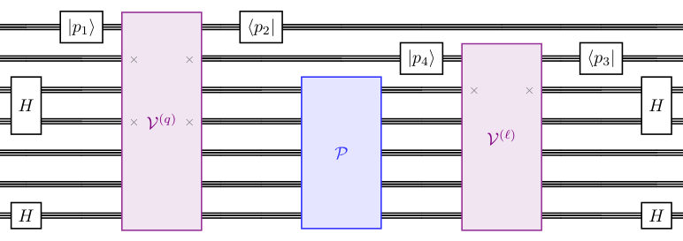
<figcaption class="paper-figure-caption"><b>Fig 2.</b> Figure 2: The full quantum circuit for simulating a DY scattering process of the form q¯q →γ/Z →ℓ−ℓ+.</figcaption>
</figure>
<figure class="paper-figure-card">
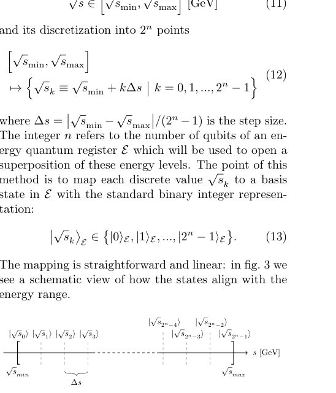
<figcaption class="paper-figure-caption"><b>Fig 3.</b> Figure 3: Discretization and state encoding of the PS range √s ∈[√smin, √smax].</figcaption>
</figure>
<figure class="paper-figure-card">
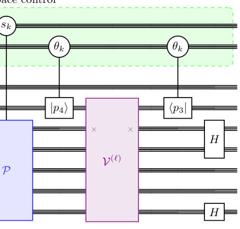
<figcaption class="paper-figure-caption"><b>Fig 4.</b> Figure 4: The PS controlled version of the DY circuit with new registers E and Θ.</figcaption>
</figure>
<figure class="paper-figure-card">
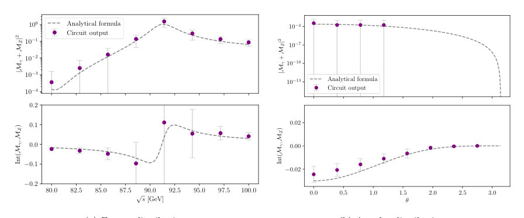
<figcaption class="paper-figure-caption"><b>Fig 5.</b> Figure 5: Circuit output for DY scattering with (a) fixed θ = π/3 and (b) fixed √s = 80 GeV at the amplitude level with full amplitude squared (top) and the associated interference pattern (below). In both simulations the circuit was run for 2 × 107 shots and 25 batches where the presented errors are the standard deviations of the batches and the points are the batch averages. The true value was computed from the analytical expressions for Mγ and MZ in eqs. (A.18) to (A.19). For viewing convenience the interference plot has been zoomed in, the large uncertainty at the resonance peak reach up to ∼0.8.</figcaption>
</figure>
</div>

<p><strong>Summary.</strong> This work proposes using quantum computation to calculate scattering cross sections for processes like Drell-Yan scattering by encoding Feynman diagrams into quantum gates. The authors develop a general circuit that can simultaneously compute the total cross-section and isolate interference effects by leveraging quantum superposition over phase space coordinates.</p>
<p><strong>Why it may be interesting.</strong> While focused on particle physics, the core contribution is the development of a general, scalable quantum circuit framework for simulating complex quantum field theory amplitudes, which is a major computational primitive for quantum algorithms.</p>
<details>
<summary>Detailed structure</summary>
<p><strong>Main problem.</strong> The paper addresses the challenge of efficiently calculating complex scattering cross sections, particularly including interference effects, by mapping Feynman diagram calculations onto quantum circuits.</p>
<p><strong>Main result.</strong> They demonstrate a general quantum circuit design capable of simultaneously estimating the full integrated cross-section and isolating interference terms for processes like Drell-Yan scattering.</p>
<p><strong>Method.</strong> The methodology involves constructing specialized quantum gates (Vertex, Propagator, Spinor) that encode Feynman rules, and then using quantum superposition and basis rotations to evaluate phase space integrals and interference terms.</p>
<p><strong>Model / system.</strong> The physical system is the partonic Drell-Yan lepton pair creation process ($qar{q} 
ightarrow \gamma/Z 
ightarrow \ell^-\ell^+$) within the Standard Model electroweak theory. The computation is performed using quantum circuits simulating the underlying quantum field theory interactions.</p>
<p><strong>Key observables.</strong> Full integrated cross-section ($\sigma$) and the isolated interference contribution ($  ext{Int} \langle M_i, M_j 
angle$).</p>
<p><strong>Important parameters / regimes.</strong> The process depends on the interplay between photon ($\gamma$) and $Z$ boson contributions, and the calculation requires discretizing the phase space over energy ($\sqrt{s}$) and scattering angle ($  heta$).</p>
<p><strong>Assumptions / limitations.</strong> The initial focus is restricted to the partonic level, neglecting Parton Distribution Functions (PDFs). Furthermore, unitarity requires defining a 'pole factor roof' $ar{m}$ for rescaling.</p>
<p><strong>Figures summary.</strong> Figures illustrate the decomposition of fundamental gates (Dirac matrices, $\eta$ gate, spinor gates, Vertex, Propagator) and show the full quantum circuit for the DY process, including PS control registers $E$ and $\Theta$.</p>
<p><strong>Paper structure.</strong> The paper systematically details the construction of necessary quantum gates (Dirac matrices, metric, spinor states, vertices, propagators) into fundamental quantum gates, followed by demonstrating the full circuit for the DY process, and finally showing how PS integration and interference isolation are achieved.</p>
</details>
<details>
<summary>Abstract</summary>
<p>We probe the possibilities of efficiently constructing simple Feynman diagrams into quantum devices. More precisely, we study Drell-Yan lepton pair creation at the partonic level of the form q qbar -&gt; gamma/Z -&gt; l- l+. We develop quantum gates that build up the relevant diagrams using simple Feynman rules, such as vertex and propagator gates V and P. We show how the quantum circuit may compute simultaneous amplitudes in the phase space and how to reach the full integrated cross section from the outputs. In addition to this, we also show how the circuit is able to simultaneously isolate the interference effects of the contributing diagrams by a simple basis rotation. The circuit design is made to be general, and thus this work constitutes a step towards the implementation of arbitrary scattering process computations and efficient interference analyses.</p>
</details>
<p><sub><a href="#top">↑ back to top</a></sub></p>

<p><a id="paper-2608.27861"></a></p>
<h3 id="vectorized-symmetric-and-fermionic-tensor-network-implementations-for-gpu-accelerated-variational-monte-carlo"><a href="http://arxiv.org/abs/2608.27861v1">Vectorized Symmetric and Fermionic Tensor Network Implementations for GPU-Accelerated Variational Monte Carlo</a></h3>
<p><strong>Authors:</strong> Si-Jing Du, Johnnie Gray, Ao Chen, Garnet Kin-Lic Chan<br>
<strong>Type:</strong> theory · <strong>Category:</strong> strongly correlated electrons · <strong>PDF:</strong> <a href="https://arxiv.org/pdf/2608.27861v1">https://arxiv.org/pdf/2608.27861v1</a><br>
<strong>Analysis basis:</strong> full PDF text, analyzed in chunks
<strong>Topic relevance:</strong> <code>analog quantum simulation</code> <strong>1/5</strong> · <code>methods for driven-dissipative</code> <strong>1/5</strong></p>
<div class="figure-strip-hint">↔ Scroll figures horizontally</div>
<div class="paper-figures-scroll">
<figure class="paper-figure-card">
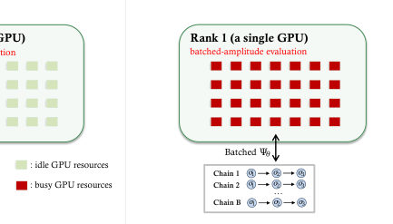
<figcaption class="paper-figure-caption"><b>Fig 1.</b> Figure 1: Parallelization schemes for TN-VMC sampling. (a) In tradi- tional TN-VMC, an MPI-parallelized program assigns one Markov chain to each MPI rank, and amplitudes are evaluated sequentially along each chain. (b) A naive GPU port keeps the same one-chain-per-rank structure, exposing only a single-configuration amplitude evaluation to the GPU at each Markov move. (c) The vectorized GPU scheme assigns B chains to each GPU rank and evaluates the corresponding amplitudes at each move stage as a batched-amplitude evalu- ation with a shared computational graph and a leading batch axis.</figcaption>
</figure>
<figure class="paper-figure-card">
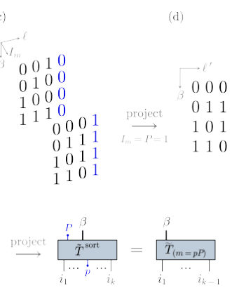
<figcaption class="paper-figure-caption"><b>Fig 2.</b> Figure 3: An example of sorting, reshaping, and projecting the sector charge table, I, for a k = 4 rank tensor of Z2 symmetry and charge Q = 1, with leg m projected onto charge P = 1. (a) The array is initially indexed by α and ℓ. (b) Sorting by the entries on m yields a new index α′. (c) This can be reshaped into two sub-indices: Im, which indexes the charge of leg m, and β, which indexes the remaining charge tuples. (d) Finally we project onto the desired value Im = P = 1 and drop leg m, yielding a new charge table indexed by β and ℓ′. (e) The corresponding leading axis transformation and projection of the flat blocks, eT, depicted graphically.</figcaption>
</figure>
<figure class="paper-figure-card">
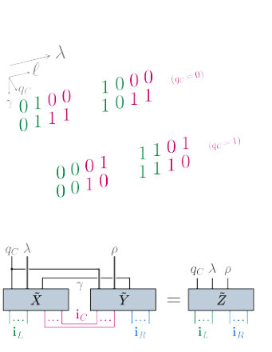
<figcaption class="paper-figure-caption"><b>Fig 3.</b> Figure 4: An example of sorting and reshaping the sector charge table I of a flat tensor e X with Z2 symmetry and charge Q = 1 to prepare for contraction. (a) The array is initially indexed by sector index α and leg index ℓ. IL denotes the charge columns of legs to be kept, IC those to be contracted away. (b) Sorting the rows lexicographically by  qC, IL, IC  yields a new sector index α′. (c) This can be reshaped into three sub-indices: qc, which indexes the combined contracted charge (row-sum of ℓ∈C); λ, which indexes the possible charge sectors on the kept legs; and γ, which indexes the remaining charge sectors on the contracted legs. (d) The corresponding leading axis transformation on...</figcaption>
</figure>
<figure class="paper-figure-card">
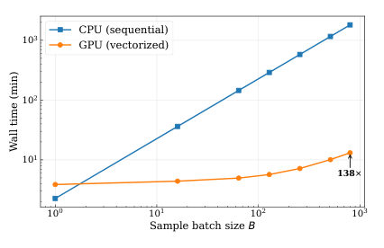
<figcaption class="paper-figure-caption"><b>Fig 4.</b> Figure 5: Single-rank VMC step time as a function of the sample batch size B. (a) TNF-fPEPS with bond dimension D = 12 and boundary-MPS bond dimension χ = 12. (b) Standard fPEPS with bond dimension D = 8 and boundary-MPS bond dimension χ = 32, using boundary-MPS environment reuse. CPU timings use one MPI rank with a single CPU core and sequential amplitude evaluation. GPU timings use one MPI rank controlling one GPU and batched amplitude evaluation with batch size B.</figcaption>
</figure>
<figure class="paper-figure-card">
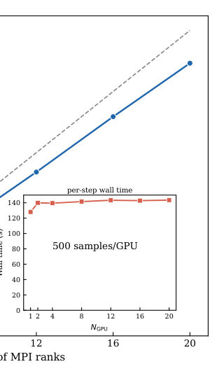
<figcaption class="paper-figure-caption"><b>Fig 5.</b> Figure 6: Multi-GPU throughput scaling of batched TN-VMC. Standard fPEPS-VMC on an 8×8 Fermi–Hubbard lattice with bond dimension D = 8 and boundary-MPS bond dimension χ = 32. Each MPI rank controls one GPU and carries a fixed batch of B = 500 walkers. The main panel shows the total number of Monte Carlo samples processed per second of VMC-step wall time as a function of the number of MPI ranks/GPUs; the dashed line indicates ideal linear throughput scaling. The inset shows the VMC-step wall time remains constant as the number of GPUs is increased.</figcaption>
</figure>
</div>

<p><strong>Summary.</strong> This paper tackles the computational bottleneck in Tensor Network Variational Monte Carlo (TN-VMC) by developing a vectorized framework optimized for GPUs. By reformulating tensor network operations into a 'flat' formalism, the authors enable batch processing of multiple Monte Carlo configurations. This results in dramatic speedups for simulating fermionic systems like the Fermi-Hubbard model, advancing the feasibility of studying strongly correlated materials.</p>
<p><strong>Why it may be interesting.</strong> The focus on GPU acceleration and vectorization techniques for simulating strongly correlated electron models is highly relevant for computational quantum physics, providing concrete algorithmic improvements for simulating Hubbard-type Hamiltonians.</p>
<details>
<summary>Detailed structure</summary>
<p><strong>Main problem.</strong> The primary challenge addressed is improving the computational efficiency of Tensor Network Variational Monte Carlo (TN-VMC) calculations by enabling full utilization of modern GPU acceleration.</p>
<p><strong>Main result.</strong> The authors developed a vectorized, GPU-adapted workflow using a 'flat' symmetric tensor formalism, achieving significant speedups (up to $300	imes$) over CPU implementations for fermionic systems.</p>
<p><strong>Method.</strong> The core method involves vectorizing the evaluation of tensor network amplitudes by batching computations over multiple Markov chains (configurations) that share the same underlying tensor structure.</p>
<p><strong>Model / system.</strong> The work is applied to strongly correlated spin and fermionic systems, with the two-dimensional Fermi–Hubbard model serving as the primary demonstration case. The variational wavefunctions are represented by Tensor Networks (TNS).</p>
<p><strong>Key observables.</strong> Variational energy $E(	heta)$, wavefunction amplitudes $\Psi_	heta(\sigma)$, and computational speedup factors.</p>
<p><strong>Important parameters / regimes.</strong> The batch size $B$ (number of configurations processed simultaneously) and the structure of the tensor network (e.g., abelian symmetric vs. general).</p>
<p><strong>Assumptions / limitations.</strong> The method assumes that the residual contraction graph for a set of configurations can be grouped by geometry, allowing for a shared computational graph suitable for dense batched tensor operations.</p>
<p><strong>Figures summary.</strong> Figure 1 illustrates the transition from traditional MPI-parallelization to an efficient, vectorized GPU scheme by batching amplitude evaluations. Other figures detail the structure of tensor block representations and contraction schemes.</p>
<p><strong>Paper structure.</strong> The paper first identifies the GPU bottleneck in existing TN-VMC. It then introduces the 'flat' symmetric tensor formalism to enable vectorization. The methodology is detailed by showing how to batch amplitude evaluations, which is demonstrated on the Fermi-Hubbard model, leading to performance benchmarks and extensions to other TN-VMC applications.</p>
</details>
<details>
<summary>Abstract</summary>
<p>Variational Monte Carlo (VMC) calculations based on tensor networks (TN) have recently achieved competitive accuracy in ground-state calculations of strongly correlated spin and fermionic systems. However, existing tensor network VMC (TN-VMC) algorithms have not been formulated in a manner that can fully utilize GPU acceleration. We tackle the key missing ingredient, namely, the vectorized evaluation of tensor network amplitudes and tensor network operations. This ensures high GPU utilization by batching over computations with identical structure. In particular, we show how to achieve vectorization for the practically relevant case of abelian symmetric tensor networks (which includes fermionic tensor networks) by developing a ``flat'' tensor network formalism for block-sparse tensor representation and contraction. Using this, we construct a GPU-adapted symmetric TN-VMC workflow with batched tensor network computation. In the two-dimensional Fermi--Hubbard model, we demonstrate a GPU speedup of up to $300 \times$ over single core CPU implementations, for fermionic TN variational wavefunctions.</p>
</details>
<p><sub><a href="#top">↑ back to top</a></sub></p>

<p><a id="paper-2608.27901"></a></p>
<h3 id="high-throughput-normalized-min-sum-belief-propagation-decoding-for-quantum-ldpc-codes-with-near-memory-processing"><a href="http://arxiv.org/abs/2608.27901v1">High-Throughput Normalized Min-Sum Belief Propagation Decoding for Quantum LDPC Codes with Near-Memory Processing</a></h3>
<p><strong>Authors:</strong> Jeonggeun Seo, Youngsun Han, Leanghok Hour, Dongmin Kim<br>
<strong>Type:</strong> both · <strong>Category:</strong> quantum information and computing · <strong>PDF:</strong> <a href="https://arxiv.org/pdf/2608.27901v1">https://arxiv.org/pdf/2608.27901v1</a><br>
<strong>Analysis basis:</strong> full PDF text, analyzed in chunks
<strong>Topic relevance:</strong> <code>QC/QI experiment</code> <strong>1/5</strong></p>
<div class="figure-strip-hint">↔ Scroll figures horizontally</div>
<div class="paper-figures-scroll">
<figure class="paper-figure-card">
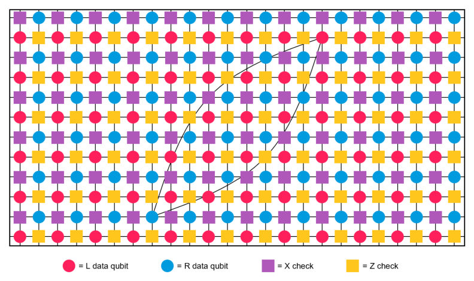
<figcaption class="paper-figure-caption"><b>Fig 1.</b> Figure 1: Tanner-graph structure of the [[144, 12, 12]] Bivariate Bicycle qLDPC code used in this work. Circles represent data (variable) nodes, while squares represent check nodes. The data nodes are divided into two registers, and the check nodes are divided into two stabilizer- check types. Long-range connections are shown schematically, while individual edge types are not distinguished for visual clarity.</figcaption>
</figure>
<figure class="paper-figure-card">
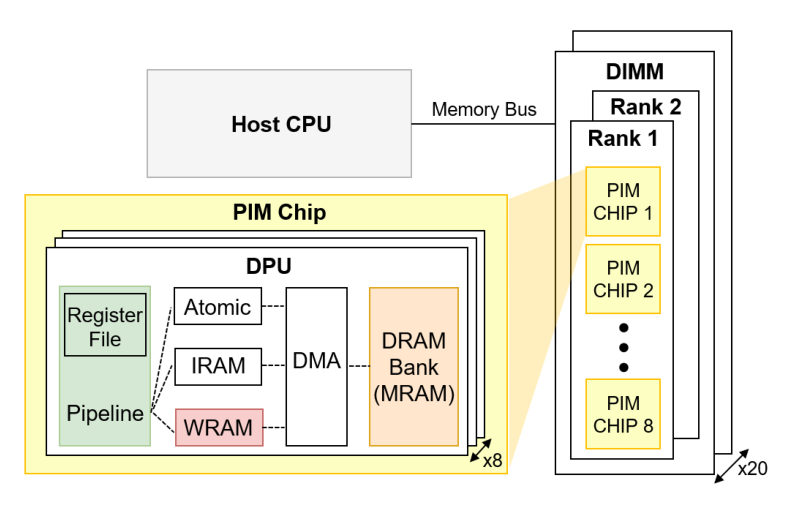
<figcaption class="paper-figure-caption"><b>Fig 2.</b> Figure 2: DPU-based PIM architecture used as the near-memory processing platform in this work. The host CPU communicates with PIM-enabled DIMMs through the memory bus. Each DIMM contains two ranks, each rank contains eight PIM chips, and each PIM chip contains eight DPUs, giving 2,560 DPUs in the 20-DIMM configuration. Each DPU includes a processing pipeline, register file, atomic unit, IRAM, WRAM, DMA support, and a local DRAM bank referred to as MRAM.</figcaption>
</figure>
<figure class="paper-figure-card">
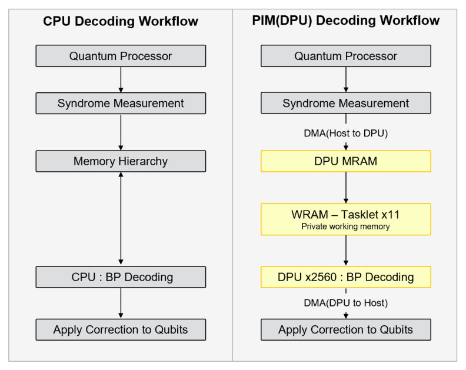
<figcaption class="paper-figure-caption"><b>Fig 3.</b> Figure 3: Overview of the conventional CPU-based and proposed DPU-based PIM decoding workflows. The proposed workflow offloads normalized Min-Sum BP computation to the DPUs and distributes independent syndrome instances across multiple DPUs for parallel decoding.</figcaption>
</figure>
<figure class="paper-figure-card">
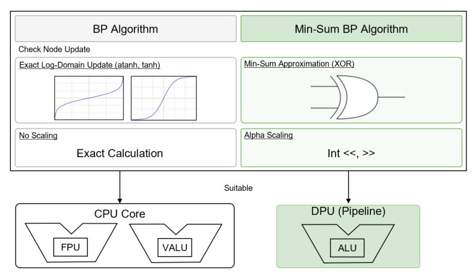
<figcaption class="paper-figure-caption"><b>Fig 4.</b> Figure 4: Arithmetic comparison of standard log-domain BP and normalized Min-Sum BP for DPU execution. Standard BP evaluates nonlinear functions such as tanh and atanh in the check-node update. Normalized Min-Sum uses sign evaluation, minimum-magnitude selection, and fixed-point scaling. The evaluated implementation uses α = 0.75 = 3/4, allowing the normalization step to be expressed using integer addition and bit shifting.</figcaption>
</figure>
<figure class="paper-figure-card">

<figcaption class="paper-figure-caption"><b>Fig 5.</b> Figure 4 compares the arithmetic structures of standard log-domain BP and normalized Min-Sum BP from the DPU execution perspective. The normalized Min-Sum implementation used in this work fixes the normalization factor to α = 0.75 = 3/4. With this value, the normalization step in the fixed-point implementation can be expressed using integer addition and bit shifting. Let mv→c denote the message from variable node v to check node c, and let mc→v denote the message in the opposite direction. Let N(c) and N(v) denote the neighboring variable and check nodes of c and v, respectively. For a measured syndrome value sc, the normalized Min-Sum check-node update is expressed as</figcaption>
</figure>
</div>

<p><strong>Summary.</strong> This paper demonstrates a high-performance computing solution for decoding quantum error-correcting codes using a DPU-based Processing-in-Memory (PIM) architecture. By mapping the iterative Belief Propagation decoding onto this near-memory platform, the authors achieve significant throughput gains and maintain predictable, low compute latency required for real-time quantum operations. This validates PIM as a viable accelerator for next-generation quantum hardware.</p>
<p><strong>Why it may be interesting.</strong> This work is highly relevant as it tackles the computational bottleneck of fault-tolerant quantum computation by proposing a hardware acceleration strategy (PIM) for decoding algorithms central to QEC.</p>
<details>
<summary>Detailed structure</summary>
<p><strong>Main problem.</strong> The paper addresses the need for classical decoders to process growing syndrome workloads in real-time quantum error correction (QEC) with low and predictable latency.</p>
<p><strong>Main result.</strong> Implementing normalized Min-Sum Belief Propagation decoding on a DPU-based Processing-in-Memory (PIM) architecture yields an 8.8x throughput improvement over CPU baselines and maintains sub-millisecond compute latency.</p>
<p><strong>Method.</strong> The authors mapped the iterative Min-Sum BP decoding algorithm onto a DPU-based PIM architecture, leveraging massive parallelism by distributing independent syndrome instances across thousands of DPUs.</p>
<p><strong>Model / system.</strong> The work focuses on decoding for Quantum Low-Density Parity-Check (qLDPC) codes, specifically the [[144,12,12]] Bivariate Bicycle code. The computation is modeled using a DPU-based PIM architecture, which allows for near-memory processing.</p>
<p><strong>Key observables.</strong> Throughput (decodes/s), per-syndrome processing time, single-syndrome tail latency, and Logical Error Rate (LER).</p>
<p><strong>Important parameters / regimes.</strong> Component-wise physical error probability (p=0.001), number of BP iterations (1 to 5), and the 1 ms decoder-side timing reference for trapped-ion QEC.</p>
<p><strong>Assumptions / limitations.</strong> The DPU latency measured is the decoder-side compute time, excluding host-DPU communication overhead. The Min-Sum BP normalization factor is fixed at 0.75 to enable integer arithmetic.</p>
<p><strong>Figures summary.</strong> Figures illustrate the qLDPC code structure (Tanner graph) and compare the decoding workflows and latency distributions between the CPU and the proposed DPU-based PIM architecture.</p>
<p><strong>Paper structure.</strong> The paper introduces the QEC decoding bottleneck, details the mapping of Min-Sum BP to the DPU-PIM architecture, presents quantitative comparisons of throughput and latency against a CPU baseline, and concludes with performance validation across varying error rates and iterations.</p>
</details>
<details>
<summary>Abstract</summary>
<p>Real-time quantum error correction requires classical decoders to process growing syndrome workloads with low and predictable latency. For quantum low-density parity-check (qLDPC) codes, iterative belief propagation (BP) repeatedly updates messages over sparse Tanner graphs, creating substantial memory-access and data-movement demands. We map normalized Min-Sum BP decoding of the [[144,12,12]] Bivariate Bicycle qLDPC code onto a DPU-based Processing-in-Memory (PIM) architecture. Within each DPU, 11 tasklets cooperatively decode one syndrome, while multiple DPUs process independent syndrome instances in parallel. Using uPIMulator and a data-qubit Pauli error model with ideal syndrome measurements, we compare throughput, per-syndrome processing time, logical error rate (LER), and single-syndrome tail latency against a 16-logical-CPU baseline. At a component-wise physical error probability of p=0.001 and one BP iteration, the projected aggregate kernel throughput of 2,560 DPUs reaches 1.071 x 10^7 decodes/s, compared with 1.22 x 10^6 decodes/s for the CPU, an 8.8x improvement. From two iterations onward, the measured LER remains below the physical error probability for every evaluated value of p. For one to five iterations, the maximum sampled serialized X+Z DPU compute latency remains below the 1 ms decoder-side reference for trapped-ion QEC, reaching approximately 0.873 ms at five iterations. These results show that near-memory processing can provide high aggregate throughput and sub-millisecond compute latency for qLDPC BP decoding under the evaluated conditions.</p>
</details>
<p><sub><a href="#top">↑ back to top</a></sub></p>

<p><a id="paper-2608.27872"></a></p>
<h3 id="hybrid-heralded-noiseless-amplification-with-finite-cutoff-quantum-scissors"><a href="http://arxiv.org/abs/2608.27872v1">Hybrid Heralded Noiseless Amplification with Finite-Cutoff Quantum Scissors</a></h3>
<p><strong>Authors:</strong> Haixi Miao, Timothy C. Ralph<br>
<strong>Type:</strong> theory · <strong>Category:</strong> quantum information and computing · <strong>PDF:</strong> <a href="https://arxiv.org/pdf/2608.27872v1">https://arxiv.org/pdf/2608.27872v1</a><br>
<strong>Analysis basis:</strong> full PDF text, analyzed in chunks
<strong>Topic relevance:</strong> <code>quantum measurements</code> <strong>1/5</strong></p>
<div class="figure-strip-hint">↔ Scroll figures horizontally</div>
<div class="paper-figures-scroll">
<figure class="paper-figure-card">
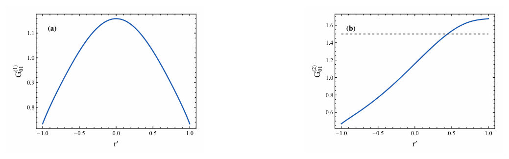
<figcaption class="paper-figure-caption"><b>Fig 1.</b> FIG. 1. Effective gain G(N) 01 as a function of the second squeezing parameter r′ for (a) cutoff 1 and (b) cutoff 2. The parameters are r = 0.75, g = 1.5, and α = 0.1. The dashed line denotes the internal NLA gain g = 1.5.</figcaption>
</figure>
<figure class="paper-figure-card">
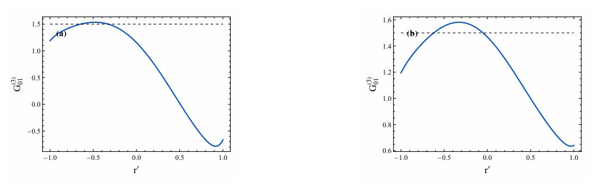
<figcaption class="paper-figure-caption"><b>Fig 2.</b> FIG. 2. Effective gain G(3) 01 as a function of r′, with g = 1.5 and α = 0.1, for (a) r = 0.75 and (b) r = 0.20. The dashed line denotes the internal NLA gain g = 1.5.</figcaption>
</figure>
<figure class="paper-figure-card">
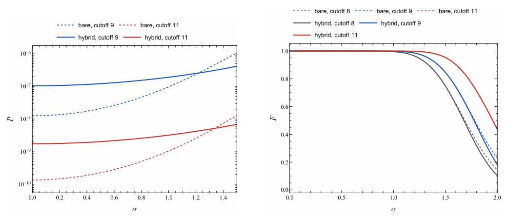
<figcaption class="paper-figure-caption"><b>Fig 3.</b> FIG. 3. Comparison of the bare NLA and the hybrid device. (a) Success probability for cutoffs 9 and 11. Increasing the cutoff reduces the absolute success probability, while the hybrid device gives a higher probability than the bare NLA at each fixed cutoff before α = 1.4. (b) Fidelity with the target coherent state for cutoffs 8, 9, and 11. The hybrid fidelity approaches that of the bare NLA as the cutoff is increased. For each cutoff, the bare NLA is evaluated at the effective gain of the corresponding hybrid device.</figcaption>
</figure>
<figure class="paper-figure-card">
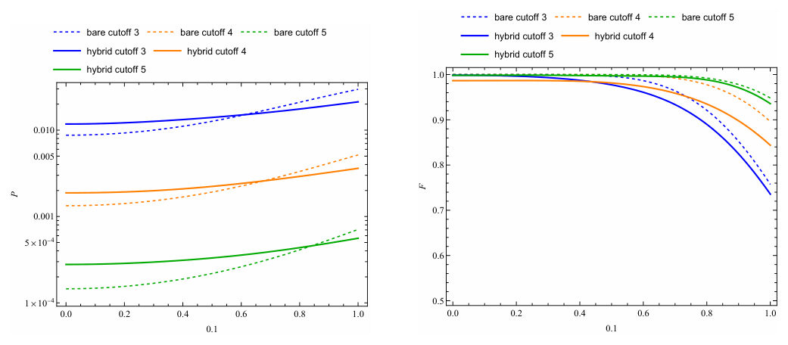
<figcaption class="paper-figure-caption"><b>Fig 4.</b> FIG. 4. Comparison of the hybrid amplifier and the corresponding bare NLA at cutoffs 3, 4, and 5. For each cutoff, the second-squeezer parameter r′ is chosen at the maximum of the effective gain, and the bare NLA is evaluated at that same gain. The common parameters are r = 0.2 and g = 1.5. (a) Success probability and (b) fidelity with the corresponding target coherent state as functions of the real input amplitude α.</figcaption>
</figure>
<figure class="paper-figure-card">
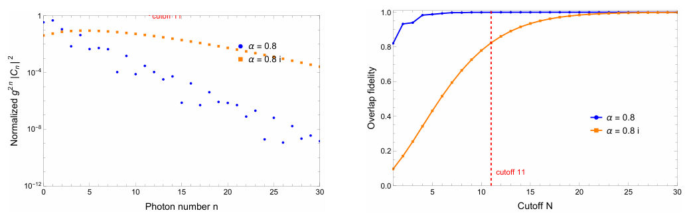
<figcaption class="paper-figure-caption"><b>Fig 5.</b> FIG. 5. Effect of the finite photon-number cutoff for coherent inputs with the same magnitude and orthogonal phases. The parameters are r = 0.25 and g = 1.5. (a) Normalized photon-number weights g2n|Cn|2 after the first squeezer and NLA weighting. The imaginary input has substantially more weight above cutoff 11. (b) Fidelity between the cutoff-N output and the corresponding untruncated output, obtained from Eq. (39). The real input is already converged at cutoff 11, whereas the imaginary input requires a higher cutoff. The dashed lines indicate cutoff 11.</figcaption>
</figure>
</div>

<p><strong>Summary.</strong> This paper analyzes a hybrid quantum amplifier that uses a finite-cutoff quantum-scissor mechanism to achieve noiseless amplification. While the ideal theory predicts perfect enhancement, the finite cutoff introduces phase dependence and limits fidelity. The results show that while the hybrid device offers a heralding advantage, maintaining high fidelity requires careful management of the input state phase and increasing the cutoff.</p>
<p><strong>Why it may be interesting.</strong> This work directly addresses the practical limitations of achieving ideal quantum operations (like noiseless amplification) by modeling the effects of physical constraints, such as finite energy cutoffs, which is a key topic in quantum optics and quantum information.</p>
<details>
<summary>Detailed structure</summary>
<p><strong>Main problem.</strong> The study investigates the performance of a hybrid noiseless linear amplifier (NLA) that incorporates a finite-cutoff quantum-scissor NLA placed between two single-mode squeezers.</p>
<p><strong>Main result.</strong> The hybrid device shows a significant heralding probability advantage over a bare NLA, but its fidelity is highly sensitive to the input phase and degrades as the input squeezing increases due to the finite cutoff.</p>
<p><strong>Method.</strong> The analysis uses Fock-basis expansions to model the state evolution through the hybrid amplifier, comparing the resulting effective gain, success probability, and fidelity against the ideal, infinite-cutoff case.</p>
<p><strong>Model / system.</strong> The system is a quantum optical setup comprising two single-mode squeezers sandwiching a finite-cutoff NLA, which truncates the photon Fock space up to a maximum number $N$.</p>
<p><strong>Key observables.</strong> Effective gain ($G$), Success probability ($P$), and Fidelity ($F$) are the primary observables used to characterize the amplification process.</p>
<p><strong>Important parameters / regimes.</strong> The cutoff photon number ($N$), the squeezing parameters ($r, r'$), and the input coherent amplitude phase ($\alpha$) are crucial parameters.</p>
<p><strong>Assumptions / limitations.</strong> The ideal NLA is assumed to have zero success probability over the full Fock space, and the finite cutoff introduces phase dependence and fidelity loss.</p>
<p><strong>Figures summary.</strong> Figures compare the effective gain, success probability, and fidelity of the hybrid device versus the bare NLA at various cutoffs (e.g., cutoff 11) and input squeezing parameters ($\chi$).</p>
<p><strong>Paper structure.</strong> The paper first establishes the ideal infinite-cutoff transformation, then analyzes the finite-cutoff device, demonstrating how gain enhancement emerges with increasing cutoff, and finally comparing the performance metrics (P and F) against the bare NLA.</p>
</details>
<details>
<summary>Abstract</summary>
<p>A noiseless linear amplifier (NLA) can probabilistically amplify an optical state without the noise required by deterministic phase-insensitive amplification. We study a hybrid amplifier in which a finite-cutoff quantum-scissor NLA is placed between two single-mode squeezers. Analysis based on an ideal (infinite cutoff) NLA finds a gain enhancement from the squeezing. We explore the physics of this enhancement as the cutoff of the quantum scissors is increased. The low-cutoff sequence shows how this gain enhancement emerges from the truncated Fock space. Cutoff 3 is the lowest order at which the additional even- and odd-photon components can both contribute to gain enhancement, albeit with some skewing of the coefficients which reduces the fidelity. As the cutoff is increased the fidelity improves. However, unlike the ideal transformation, the finite-cutoff device depends on the phase of the coherent amplitude relative to the squeezing axes, with states aligned with the anti-squeezing requiring higher cutoffs to achieve high fidelity. We track behavior to high cutoffs and eventually see the performance predicted in the ideal theory emerge.</p>
</details>
<p><sub><a href="#top">↑ back to top</a></sub></p>

<p><a id="paper-2608.28059"></a></p>
<h3 id="landau-theory-of-quenched-criticality-in-linear-in-context-learning"><a href="http://arxiv.org/abs/2608.28059v1">Landau theory of quenched criticality in linear in-context learning</a></h3>
<p><strong>Authors:</strong> Daesik Kim, Sumin Choi, Hyojae Jeon, Jung Hoon Han<br>
<strong>Type:</strong> theory · <strong>Category:</strong> disordered systems and neural networks · <strong>PDF:</strong> <a href="https://arxiv.org/pdf/2608.28059v1">https://arxiv.org/pdf/2608.28059v1</a><br>
<strong>Analysis basis:</strong> full PDF text, analyzed in chunks
<strong>Topic relevance:</strong> <code>non-equilibrium universality</code> <strong>1/5</strong></p>
<div class="figure-strip-hint">↔ Scroll figures horizontally</div>
<div class="paper-figures-scroll">
<figure class="paper-figure-card">
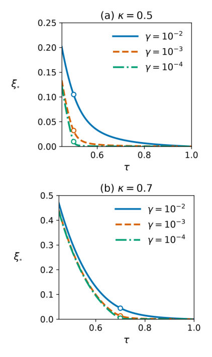
<figcaption class="paper-figure-caption"><b>Fig 1.</b> FIG. 1: Order parameter ξ∗as a function of τ below the critical temperature τc = 1 for several values of κ &lt; 1 and γ ≪1. The crossover temperature τ = κ is indicated by hollow circles. The residual order in the crossover region κ &lt; τ &lt; 1 diminishes as γ →0.</figcaption>
</figure>
<figure class="paper-figure-card">
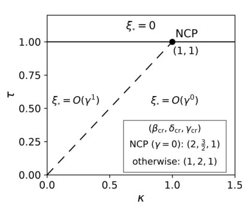
<figcaption class="paper-figure-caption"><b>Fig 2.</b> FIG. 2: Schematic phase diagram for γ ≪1 in the (κ,τ) plane. The transition between the ordered phase ξ∗&gt; 0 and disordered phase ξ∗= 0 occurs at τc = 1 (solid line). Above the crossover temperature τ = κ (dashed line), the ordered phase exhibits a small residual order ξ∗= O(γ) characteristic of a pseudogap regime. When we take the γ →0 limit first, the crossover line becomes the exact phase transition. Furthermore, the nonanalytic critical point (NCP) at (κ,τ) = (1,1) develops new critical exponents (βcr,δcr,γcr) = (2,3/2,1) different from the rest of the phase diagram where (βcr,δcr,γcr) = (1,2,1).</figcaption>
</figure>
<figure class="paper-figure-card">
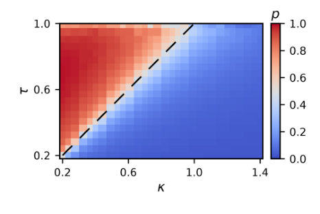
<figcaption class="paper-figure-caption"><b>Fig 3.</b> FIG. 4: Map of the numerically extracted power-law exponents p in the assumed scaling relation ξ∗∝γ p. The ordered phase τ &lt; 1 separates into two distinct scaling regimes with p ≈0 and p ≈1 (pseudogap region), divided by the theoretically predicted crossover line τ = κ (dashed line).</figcaption>
</figure>
<figure class="paper-figure-card">
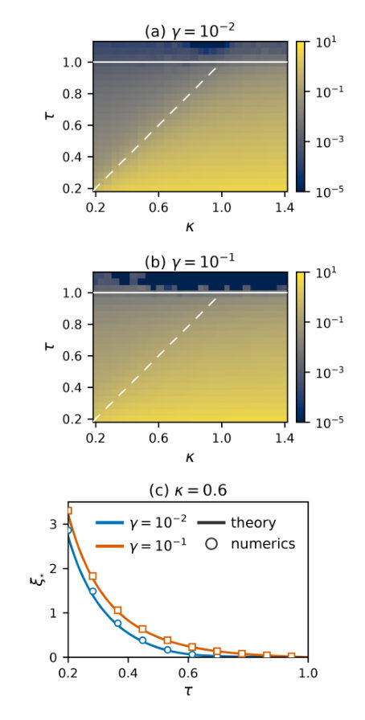
<figcaption class="paper-figure-caption"><b>Fig 4.</b> FIG. 3: Plot of the order parameter ξ∗in the (κ,τ) plane for (a) γ = 10−2 and (b) γ = 10−1. The solid and dashed white lines are the true critical line τ = 1 and crossover line τ = κ, respectively. Other parameters used are d = 30, λ = 10−5, and σ = 0. A small shift ξ∗→ξ∗+10−5 was made to avoid numerical instability of the logarithm at small ξ∗. Depression of the order parameter in the pseudogap region is highly visible for very small value of γ used in (a). (c) Comparison of the order parameter extracted from Eq. (6.1) (hollow marks) with the theoretical curves obtained by solving the self-consistency equation (5.1) at κ = 0.6.</figcaption>
</figure>
</div>

<p><strong>Summary.</strong> This paper analyzes the interpolation singularity in linear in-context learning by mapping the problem onto the framework of critical phenomena in disordered systems. Using a Landau theory approach, the authors derive critical exponents and predict the behavior of the system near the singularity. This work provides a solid statistical-physics understanding of how learning capacity limits manifest in modern AI models.</p>
<p><strong>Why it may be interesting.</strong> The application of established critical phenomena tools (Landau theory, critical exponents) to the dynamics of deep learning models provides a powerful, physics-grounded framework for understanding generalization and learning capacity.</p>
<details>
<summary>Detailed structure</summary>
<p><strong>Main problem.</strong> The paper investigates the interpolation singularity in linear in-context learning (ICL) by treating it as a critical phenomenon in a quenched disordered system.</p>
<p><strong>Main result.</strong> A Landau theory is constructed, predicting critical exponents $(eta_{cr}, \delta_{cr}, \gamma_{cr}) = (1, 2, 1)$ for the singularity, which is confirmed by numerical simulations.</p>
<p><strong>Method.</strong> The authors compare annealed and quenched descriptions of the linear ICL model, constructing a Landau potential from the cavity self-consistency equation.</p>
<p><strong>Model / system.</strong> The model is linear ICL, where prediction error exhibits a double-descent singularity when pretraining samples approach the number of parameters. The analysis uses concepts from statistical physics, mapping ICL parameters to temperature and magnetic field variables.</p>
<p><strong>Key observables.</strong> Landau susceptibility, order parameter ($\xi$), and the prediction error ($E$).</p>
<p><strong>Important parameters / regimes.</strong> Normalized sample complexity ($ au$), context length ($\alpha$), task diversity ($\kappa$), and the critical temperature ($ au_c = 1$).</p>
<p><strong>Assumptions / limitations.</strong> The theory assumes that connected sample-to-sample fluctuations are the microscopic origin of the singular error, and it relies on asymptotic limits ($d 	o \infty$).</p>
<p><strong>Figures summary.</strong> Figures illustrate the order parameter $\xi^*$ in the $(\kappa, 	au)$ plane, showing the true critical line ($ au=1$) and crossover line ($ au=\kappa$), and map the numerically extracted power-law exponents $p$ in the scaling relation $\xi^* \propto \gamma^p$.</p>
<p><strong>Paper structure.</strong> The paper follows a structure detailing the formulation, annealed theory, quenched cavity solution, Landau functional construction, numerical testing, and final summary.</p>
</details>
<details>
<summary>Abstract</summary>
<p>In-context learning (ICL) allows a pretrained model to infer a new task from examples supplied in its prompt without updating its parameters. In linear models of ICL, the prediction error develops a double-descent singularity when the number of pretraining samples becomes comparable to the number of learnable parameters. We formulate this interpolation singularity as a critical phenomenon of a quenched disordered system. By comparing annealed and quenched descriptions of the same linear ICL model, we identify the connected sample-to-sample fluctuations of the learned parameters as the microscopic origin of the singular error. A Landau potential is constructed by integrating the cavity self-consistency equation for the renormalized ridge parameter $ξ$. The role of (magnetization) order parameter is played by $ξ$, while the bare ridge parameter $λ$ becomes its conjugate magnetic field. The normalized sample complexity $τ$ acts as a temperature and the double-descent singularity occurs at the critical temperature $τ_c =1$. The Landau susceptibility is precisely the quantity that diverges in the fluctuation contribution to the prediction error. The order parameter is closely related to the fraction of zero eigenvalues of the empirical relaxation matrix in the ridgeless limit, which define flat directions in the learning dynamics. The Landau theory is generically cubic in the order parameter with critical exponents $(β_{\rm cr},δ_{\rm cr},γ_{\rm cr})=(1,2,1)$. In the large-context regime, there appears a pseudogap-like regime characterized by suppressed order parameter. Predictions of the Landau theory are independently confirmed from numerical solutions of the original learning problem with good quantitative agreement. Our results pave the way for solid statistical-physics understanding of the interpolation criticality in linear in-context learning.</p>
</details>
<p><sub><a href="#top">↑ back to top</a></sub></p>

<p><a id="paper-2608.27682"></a></p>
<h3 id="logical-neural-belief-propagation-for-linear-complexity-decoding-of-surface-codes"><a href="http://arxiv.org/abs/2608.27682v1">Logical Neural Belief Propagation for Linear-Complexity Decoding of Surface Codes</a></h3>
<p><strong>Authors:</strong> Hee-Youl Kwak, Seong-Joon Park, Dae-Young Yun, Eliya Nachmani, Jae-Won Kim<br>
<strong>Type:</strong> theory · <strong>Category:</strong> quantum information and computing · <strong>PDF:</strong> <a href="https://arxiv.org/pdf/2608.27682v1">https://arxiv.org/pdf/2608.27682v1</a><br>
<strong>Analysis basis:</strong> full PDF text, analyzed in chunks
<strong>Topic relevance:</strong> <code>quantum measurements</code> <strong>1/5</strong></p>
<div class="figure-strip-hint">↔ Scroll figures horizontally</div>
<div class="paper-figures-scroll">
<figure class="paper-figure-card">
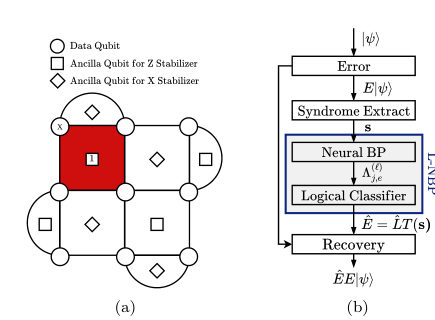
<figcaption class="paper-figure-caption"><b>Fig 1.</b> FIG. 1. (a) A d = 3 surface-code lattice with data and ancilla qubits and stabilizers. (b) QEC workflow: a physical error E induces the syndrome s, and L-NBP uses s to infer a recovery operation.</figcaption>
</figure>
<figure class="paper-figure-card">
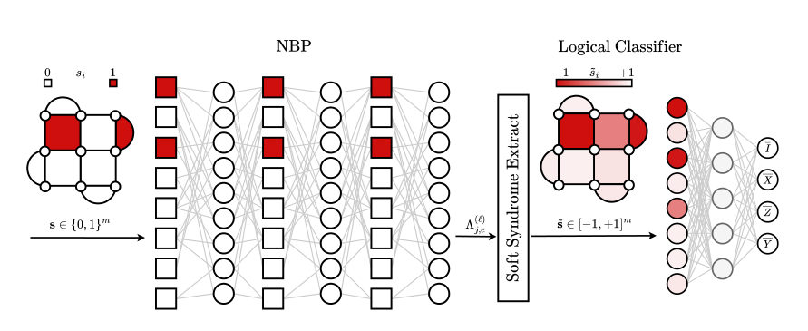
<figcaption class="paper-figure-caption"><b>Fig 2.</b> FIG. 2. The proposed L-NBP decoder consists of two stages. The NBP module processes the measured hard syndrome s and produces posterior beliefs Λ(ℓ) j,e; the logical classifier then converts these beliefs into a soft syndrome ˜s and maps it to the logical operator. All stages of L-NBP are trained end-to-end for accurate logical classification.</figcaption>
</figure>
<figure class="paper-figure-card">
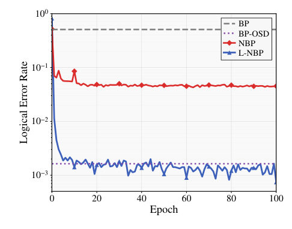
<figcaption class="paper-figure-caption"><b>Fig 3.</b> FIG. 3. LER versus training epochs for the d = 9 surface code under the code-capacity model. Both NBP and L-NBP improve on BP, but only L-NBP converges to a substantially lower LER and surpasses the BP-OSD baseline.</figcaption>
</figure>
<figure class="paper-figure-card">
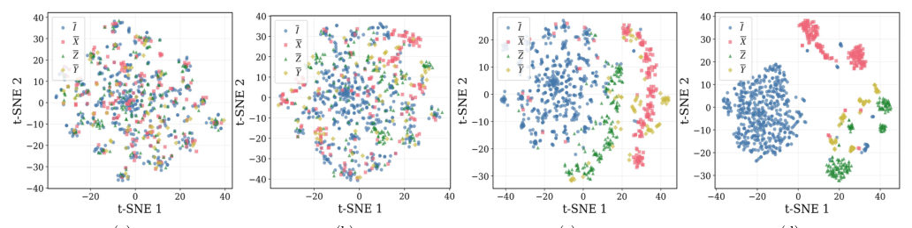
<figcaption class="paper-figure-caption"><b>Fig 4.</b> FIG. 4. t-SNE visualization of the L-NBP soft syndrome ˜s at successive training stages, after (a) 100, (b) 500, and (c) 1000 training batches, and (d) at the end of training (surface code d = 9, p = 0.05). Each color represents one of the four logical operators {¯I, ¯ X, ¯Z, ¯Y }. As training proceeds, the soft syndrome separates into increasingly compact and well-separated clusters by logical operator.</figcaption>
</figure>
<figure class="paper-figure-card">

<figcaption class="paper-figure-caption"><b>Fig 5.</b> FIG. 5. LER comparison under (a) code-capacity noise at d = 13, (b) phenomenological noise at d = 9, and (c) circuit- level noise at d = 9.</figcaption>
</figure>
</div>

<p><strong>Summary.</strong> This paper introduces Logical Neural Belief Propagation (L-NBP), a novel decoder for surface codes that improves quantum error correction performance. L-NBP achieves this by training a neural network to decode directly at the logical level, rather than the physical error level. It successfully maintains the linear complexity of Belief Propagation while matching or exceeding the accuracy of more complex, non-scalable decoders.</p>
<p><strong>Why it may be interesting.</strong> The combination of classical graph algorithms (BP) with modern machine learning techniques (Neural Networks) to solve a fundamental problem in quantum computation is highly relevant for developing practical quantum hardware.</p>
<details>
<summary>Detailed structure</summary>
<p><strong>Main problem.</strong> Developing quantum error correction (QEC) decoders that achieve high logical accuracy while maintaining linear complexity scaling with code length.</p>
<p><strong>Main result.</strong> The proposed L-NBP decoder matches or outperforms state-of-the-art decoders (MWPM, BP-OSD) while retaining the linear complexity of Belief Propagation.</p>
<p><strong>Method.</strong> It uses a Neural Belief Propagation (NBP) module to generate soft posterior beliefs, which are then fed into a trainable logical classifier to predict the logical operator end-to-end.</p>
<p><strong>Model / system.</strong> The work focuses on decoding surface codes, which are leading candidates for QEC due to their local connectivity and high error threshold.</p>
<p><strong>Key observables.</strong> Logical Error Rate (LER), computational complexity (FLOPs), and the soft syndrome $\tilde{s}$ used for classification.</p>
<p><strong>Important parameters / regimes.</strong> Depolarizing noise threshold (achieved 17.5%), code distance ($d=9$), and the linear complexity scaling ($O(n)$).</p>
<p><strong>Assumptions / limitations.</strong> The primary assumption is that training the decoder end-to-end on the logical objective is necessary for optimal performance.</p>
<p><strong>Figures summary.</strong> Figures illustrate the QEC workflow, the comparison of FLOPs scaling between L-NBP and BP-OSD across different noise models, and t-SNE plots showing the separation of logical operators in the soft syndrome space.</p>
<p><strong>Paper structure.</strong> The paper introduces the problem, details the L-NBP architecture (NBP $\rightarrow$ Soft Syndrome $\rightarrow$ Logical Classifier), compares its performance and complexity against established decoders (MWPM, BP-OSD), and validates the end-to-end training objective.</p>
</details>
<details>
<summary>Abstract</summary>
<p>Quantum error correction (QEC) requires decoders that achieve high logical accuracy while scaling efficiently with the code length. Belief propagation (BP) is attractive for its linear decoding complexity, but conventional BP decoders often fail to reach sufficient logical accuracy on surface codes. We propose Logical Neural Belief Propagation (L-NBP), a BP-based neural decoder that redirects the decoding objective from physical-level decoding to logical-level decoding. L-NBP first runs a neural BP (NBP) module that produces posterior beliefs, and a logical classifier then transforms these beliefs into a continuous-valued soft syndrome and predicts the logical operator. Because all components in L-NBP are trainable by backpropagation, L-NBP is trained end-to-end, so that the NBP module learns to extract soft syndromes that are favorable for logical classification. On surface codes, L-NBP matches or outperforms the BP with ordered-statistics decoding (BP-OSD) and minimum-weight perfect matching (MWPM) while retaining the linear complexity of BP, and achieves a threshold of $17.5\%$ under depolarizing noise. Moreover, under circuit-level noise, L-NBP matches the accuracy of BP-OSD on the distance-$9$ surface code while requiring only $0.2\%$ of its complexity. These results show that combining BP, neural weights, and logical-level decoding enables scalable and high-accuracy quantum decoding.</p>
</details>
<p><sub><a href="#top">↑ back to top</a></sub></p>

<p><a id="paper-2608.27573"></a></p>
<h3 id="quantum-resource-estimation-for-simulating-the-syk-model-with-trotterization-qdrift-and-asymmetric-qubitization"><a href="http://arxiv.org/abs/2608.27573v1">Quantum Resource Estimation for Simulating the SYK Model with Trotterization, qDRIFT, and Asymmetric Qubitization</a></h3>
<p><strong>Authors:</strong> Brian Goldsmith, Larissa Kroell, Nishna Aerabati<br>
<strong>Type:</strong> theory · <strong>Category:</strong> quantum information and computing · <strong>PDF:</strong> <a href="https://arxiv.org/pdf/2608.27573v1">https://arxiv.org/pdf/2608.27573v1</a><br>
<strong>Analysis basis:</strong> full PDF text, analyzed in chunks
<strong>Topic relevance:</strong> <code>analog quantum simulation</code> <strong>1/5</strong></p>
<div class="figure-strip-hint">↔ Scroll figures horizontally</div>
<div class="paper-figures-scroll">
<figure class="paper-figure-card">

<figcaption class="paper-figure-caption"><b>Fig 1.</b> Fig. 1. Circuit diagram for Pauli Product Rotation eiθY0Z1X3 obtained using Construct’s Circuit Designer. The Rz rotation in the diagram performs a rotation with angle 2θ.</figcaption>
</figure>
<figure class="paper-figure-card">

<figcaption class="paper-figure-caption"><b>Fig 2.</b> Fig. 2. Number of T gates as a function of the total error εtotal for different methods at different Majorana counts. While qDRIFT requires fewer T gates for large εtotal, asymmetric qubitization is better overall with near constant scaling with εtotal. When calculating the T gates, εrot is assumed to be equal to εalg, as described in Section III-B. The coupling constants are set to equivalent values (Jt = 24 for Trotter and qDRIFT and Jt = 1 for AQ).</figcaption>
</figure>
<figure class="paper-figure-card">

<figcaption class="paper-figure-caption"><b>Fig 3.</b> Fig. 3. Qubit counts and total T gates as a function of the number of Majorana modes. The top plot shows the scaling in qubit count, while the bottom plot gives the scaling for the total number of T gates required. PPR based methods provide a better qubit count, but their T count (with qDRIFT requiring fewer resources) is much higher than the one for AQ. For the T gate scaling εtotal is fixed at 10−4. Coupling constants were again fixed equivalently for all methods (Jt = 24 for Trotter and qDRIFT and Jt = 1 for AQ).</figcaption>
</figure>
</div>

<p><strong>Summary.</strong> This work compares three methods—Trotterization, qDRIFT, and asymmetric qubitization—for simulating the complex SYK model on quantum hardware. By estimating qubit and T gate counts, the authors demonstrate that while some methods are qubit-efficient, asymmetric qubitization offers superior resource scaling, particularly concerning the number of required T gates. This provides a crucial resource guide for future quantum simulation efforts.</p>
<p><strong>Why it may be interesting.</strong> The comparison of resource scaling across different quantum simulation techniques (Trotter vs. QSP-based) provides concrete, actionable data for researchers designing quantum algorithms for strongly correlated quantum systems.</p>
<details>
<summary>Detailed structure</summary>
<p><strong>Main problem.</strong> The paper addresses the critical need to understand the resource requirements for simulating the Sachdev-Ye-Kitaev (SYK) model on early fault-tolerant quantum computers.</p>
<p><strong>Main result.</strong> While qDRIFT and Trotterization use fewer qubits, asymmetric qubitization proves advantageous in most cases due to the significantly lower required count of T gates.</p>
<p><strong>Method.</strong> The authors compare three distinct quantum simulation techniques—Trotterization, qDRIFT, and asymmetric qubitization utilizing Quantum Signal Processing (QSP)—to estimate quantum resources.</p>
<p><strong>Model / system.</strong> The study focuses on simulating the SYK model, a system of interacting Majorana fermions, which is theoretically important due to its connection to holographic duality and AdS/CFT correspondence.</p>
<p><strong>Key observables.</strong> Qubit count and T gate count, analyzed as functions of simulation precision ($\epsilon_{alg}$) and the number of Majorana modes ($N$).</p>
<p><strong>Important parameters / regimes.</strong> Precision ($\epsilon_{alg}$), number of Majorana modes ($N$), and simulation time ($t$).</p>
<p><strong>Assumptions / limitations.</strong> The resource estimates are based on theoretical scaling analyses of the three distinct Hamiltonian simulation methods.</p>
<p><strong>Figures summary.</strong> Figure 2 compares T gate scaling ($\epsilon$ dependence) showing QSP's superior scaling, while Figure 3 compares qubit count and T gate scaling ($N$ dependence) showing AQ's advantage in T gate count.</p>
<p><strong>Paper structure.</strong> The paper introduces the SYK model and the simulation challenge, details the three methods (Trotterization, qDRIFT, AQ/QSP), presents resource estimates for qubit and T gates, and concludes with a comparison of the scaling laws.</p>
</details>
<details>
<summary>Abstract</summary>
<p>The Sachdev-Ye-Kitaev (SYK) model has been identified as a promising candidate to run on early fault-tolerant quantum computers due to the relatively modest resources required to probe non-trivial physics (namely holographic duality and AdS/CFT correspondence). As such, it is crucial that the details of how to run such a simulation are well understood. Using PsiQuantum's Construct platform, we implement and analyze three different approaches to simulate the SYK model: Trotterization, qDRIFT, and asymmetric qubitization with Quantum Signal Processing. We provide an open-source library containing implementations for SYK simulation using all three methods, which we use to obtain quantum resource estimates for qubit and T gate count as functions of the number of Majorana modes and precision. We find that while qDRIFT and Trotterization benefit from a lower qubit count, the large number of T gates required lead to asymmetric qubitization being advantageous in most cases. This reinforces previous theoretical considerations. We intend both the implementations and the estimates to be useful for researchers to continue to study the SYK model and understand how the techniques and resources vary.</p>
</details>
<p><sub><a href="#top">↑ back to top</a></sub></p>

<p><a id="paper-2608.28510"></a></p>
<h3 id="sufficient-positive-maps-between-von-neumann-algebras-renyi-divergences"><a href="http://arxiv.org/abs/2608.28510v1">Sufficient positive maps between von Neumann algebras: Rényi divergences</a></h3>
<p><strong>Authors:</strong> Anna Jenčová, Lauritz van Luijk<br>
<strong>Type:</strong> theory · <strong>Category:</strong> quantum information and computing · <strong>PDF:</strong> <a href="https://arxiv.org/pdf/2608.28510v1">https://arxiv.org/pdf/2608.28510v1</a><br>
<strong>Analysis basis:</strong> full PDF text, analyzed in chunks
<strong>Topic relevance:</strong> <code>quantum measurements</code> <strong>1/5</strong></p>
<div class="figure-strip-hint">↔ Scroll figures horizontally</div>
<div class="paper-figures-scroll">
<figure class="paper-figure-card">

<figcaption class="paper-figure-caption"><b>Fig 1.</b> Low-resolution page preview, page 2</figcaption>
</figure>
<figure class="paper-figure-card">

<figcaption class="paper-figure-caption"><b>Fig 2.</b> Low-resolution page preview, page 3</figcaption>
</figure>
<figure class="paper-figure-card">

<figcaption class="paper-figure-caption"><b>Fig 3.</b> Low-resolution page preview, page 4</figcaption>
</figure>
<figure class="paper-figure-card">

<figcaption class="paper-figure-caption"><b>Fig 4.</b> Low-resolution page preview, page 5</figcaption>
</figure>
<figure class="paper-figure-card">

<figcaption class="paper-figure-caption"><b>Fig 5.</b> Low-resolution page preview, page 6</figcaption>
</figure>
</div>

<p><strong>Summary.</strong> This work develops recovery theorems for generalized Rényi divergences in the context of von Neumann algebras. It characterizes when the data processing inequality becomes an equality, linking this condition directly to the concept of a 'sufficient' quantum map. This provides deep mathematical insight into information preservation under general quantum operations.</p>
<p><strong>Why it may be interesting.</strong> It provides rigorous mathematical tools to quantify how much information about a quantum state is preserved (or recoverable) when the state undergoes a general physical process (the map $T$), which is fundamental to quantum channel characterization.</p>
<details>
<summary>Detailed structure</summary>
<p><strong>Main problem.</strong> The paper aims to establish recovery theorems for $\alpha$-$z$ Rényi divergences when applied to quantum states undergoing evolution via normal unital positive maps between von Neumann algebras.</p>
<p><strong>Main result.</strong> Equality in the data processing inequality for these divergences is shown to be equivalent to the map being 'sufficient' with respect to the pair of states, which characterizes the recovery of information.</p>
<p><strong>Method.</strong> The proof relies on analyzing the equality case of the data processing inequality using $L^p$-spaces associated with $JW^*$-subalgebras and generalizing techniques from the 2-positive setting to mere positivity.</p>
<p><strong>Model / system.</strong> The mathematical framework involves von Neumann algebras ($M, N$) representing the observable structure, and the physical process is modeled by normal unital positive maps ($T: N \to M$) acting as quantum channels.</p>
<p><strong>Key observables.</strong> $\alpha$-$z$ quantum Rényi divergences ($D_{\alpha,z}$), the data processing inequality (DPI), and the concept of map sufficiency.</p>
<p><strong>Important parameters / regimes.</strong> The divergence parameter $\alpha$ and the auxiliary parameter $z$ are crucial, alongside the structure of the von Neumann algebras.</p>
<p><strong>Assumptions / limitations.</strong> The initial theorems assume faithfulness of the involved states, though the work aims to relax this. The analysis heavily utilizes the structure of $JW^*$-subalgebras.</p>
<p><strong>Paper structure.</strong> The paper develops from general results on the DPI to specific recovery theorems for Rényi divergences, utilizing the algebraic structure of $JW^*$-subalgebras and $L^p$-spaces to generalize previous findings.</p>
</details>
<details>
<summary>Abstract</summary>
<p>We prove recovery theorems for $α$-$z$ Rényi divergences under normal unital positive maps between von Neumann algebras. Previous results in this setting required 2-positivity, while recent finite dimensional work showed that this assumption can be relaxed to mere positivity. Our proof uses sufficiency for JW<em>-subalgebras and $L^p$-spaces over them to characterize equality in the data processing inequality. As a further application of our methods, we solve a problem discussed by Haagerup and Stormer: Every conditional expectation of a von Neumann algebra onto a JW</em>-subalgebra factors through a conditional expectation onto the generated von Neumann subalgebra.</p>
</details>
<p><sub><a href="#top">↑ back to top</a></sub></p>
<h2 id="other-papers-22">Other papers (22)</h2>
<p><em>Papers from primary archives without highlighted authors or any topic match. Click to expand.</em></p>
<details>
<summary>Show other papers</summary>

<p><a id="paper-2608.27764"></a></p>
<h3 id="benchmarking-quantum-feature-encoding-strategies-for-binary-classification-with-qsvm"><a href="http://arxiv.org/abs/2608.27764v1">Benchmarking Quantum Feature Encoding Strategies for Binary Classification with QSVM</a></h3>
<p><strong>Authors:</strong> Murat Kurt<br>
<strong>Type:</strong> both · <strong>Category:</strong> quantum information and computing · <strong>PDF:</strong> <a href="https://arxiv.org/pdf/2608.27764v1">https://arxiv.org/pdf/2608.27764v1</a><br>
<strong>Analysis basis:</strong> full PDF text, analyzed in chunks</p>
<div class="figure-strip-hint">↔ Scroll figures horizontally</div>
<div class="paper-figures-scroll">
<figure class="paper-figure-card">

<figcaption class="paper-figure-caption"><b>Fig 1.</b> Figure 1: Comparison of training and test accuracy across encoding strategies for the EEG Eye State Classification Dataset.</figcaption>
</figure>
<figure class="paper-figure-card">

<figcaption class="paper-figure-caption"><b>Fig 2.</b> Figure 2: Comparison of test Precision, Recall, and F1 scores for the EEG Eye State Classifica- tion Dataset.</figcaption>
</figure>
<figure class="paper-figure-card">

<figcaption class="paper-figure-caption"><b>Fig 3.</b> Figure 2 provides a more detailed view of the accuracy results in terms of Precision, Recall, and F1. The F1 score increased from 0.667 for Angle-RY to 0.775 for Pearson-based RY+CRY. Z feature Map achieved an F1 score of 0.802, whereas ZZ linear, ZZ circular, and ZZ full achieved 0.809, 0.813, and 0.817, respectively. The highest Precision value, 0.908, was obtained with ZZ full. ZZ circular and ZZ linear</figcaption>
</figure>
<figure class="paper-figure-card">

<figcaption class="paper-figure-caption"><b>Fig 4.</b> Figure 3: Comparison of test ROC-AUC values across encoding strategies for the EEG Eye State Classification Dataset.</figcaption>
</figure>
<figure class="paper-figure-card">

<figcaption class="paper-figure-caption"><b>Fig 5.</b> Figure 4 illustrates how the improvement in classification performance is reflected in model generalization. The Accuracy Gap for Angle-RY and H+RY was approximately 0.001. However,</figcaption>
</figure>
</div>
<p><strong>Summary.</strong> This paper benchmarks various quantum feature encoding strategies for use with Quantum Support Vector Machines on five different datasets. It finds that while incorporating data statistics into the encoding can improve performance, overly complex circuits do not guarantee better results. Ultimately, the best strategy requires balancing predictive accuracy with the actual resource cost of the quantum circuit.</p>
<p><strong>Why it may be interesting.</strong> While focused on ML, the work directly addresses the resource cost (circuit depth/gates) versus performance trade-off in quantum algorithms, which is crucial for designing practical quantum circuits.</p>
<details>
<summary>Detailed structure</summary>
<p><strong>Main problem.</strong> The study investigates how different methods of encoding classical data into quantum states affect the performance of Quantum Support Vector Machines (QSVM) for binary classification.</p>
<p><strong>Main result.</strong> The choice of quantum feature encoding strategy is highly dependent on the underlying data structure, and a composite metric balancing predictive performance with quantum circuit complexity is necessary for proper evaluation.</p>
<p><strong>Method.</strong> The authors benchmarked various feature maps, comparing standard encodings against novel methods that incorporate statistical dependencies (like Pearson or Mutual Information) using controlled gates.</p>
<p><strong>Model / system.</strong> The model is a quantum computing framework utilizing QSVM. The experiments are simulated using state vector based numerical computation on five distinct binary classification datasets.</p>
<p><strong>Key observables.</strong> Accuracy, F1 score, ROC-AUC, log-loss, circuit depth, and gate counts.</p>
<p><strong>Important parameters / regimes.</strong> The statistical dependency measures used include Pearson correlation, Spearman correlation, Mutual Information, and Distance Correlation.</p>
<p><strong>Assumptions / limitations.</strong> The results are based on the state vector representation of ideal quantum states and do not reflect noise or sampling uncertainty from physical hardware.</p>
<p><strong>Figures summary.</strong> The notes reference tables (Table 24, 25, 26) showing the Quantum Feature Encoding Score (QFES) for specific datasets, comparing various encoding strategies.</p>
<p><strong>Paper structure.</strong> The paper systematically compares multiple quantum feature encoding strategies (e.g., Angle-RY, Z feature Map, RY+CRY-Pearson) across five datasets, culminating in the use of a composite QFES metric to guide the selection of the optimal encoding.</p>
</details>
<details>
<summary>Abstract</summary>
<p>The way in which classical data are encoded into quantum states plays a significant role in both classification performance and quantum circuit complexity in Quantum Machine Learning. In this study, the effects of different quantum feature encoding strategies on Quantum Support Vector Machine performance were investigated using five binary classification datasets. In particular, the statistical relationships between features were incorporated into quantum circuits through \(RY(θ)\) and controlled-\(RY(θ)\) gates, and this approach was compared with conventional quantum feature maps. The results demonstrate that incorporating statistical relationships into the encoding process can influence classification performance. However, more complex and densely entangled circuits do not necessarily yield higher performance. In addition, a composite evaluation metric was employed to jointly assess predictive performance, generalization, and circuit cost. The findings across the five datasets indicate that the choice of quantum feature encoding strategy should account for the underlying structure of the data and that predictive performance should be evaluated together with quantum circuit complexity.</p>
</details>
<p><sub><a href="#top">↑ back to top</a></sub></p>

<p><a id="paper-2608.27664"></a></p>
<h3 id="bound-state-of-a-he-3-atom-at-free-he-4-surfaces"><a href="http://arxiv.org/abs/2608.27664v1">Bound state of a He-3 atom at free He-4 surfaces</a></h3>
<p><strong>Authors:</strong> Massimo Boninsegni<br>
<strong>Type:</strong> theory · <strong>Category:</strong> statistical mechanics · <strong>PDF:</strong> <a href="https://arxiv.org/pdf/2608.27664v1">https://arxiv.org/pdf/2608.27664v1</a><br>
<strong>Analysis basis:</strong> full PDF text, analyzed in chunks</p>
<div class="figure-strip-hint">↔ Scroll figures horizontally</div>
<div class="paper-figures-scroll">
<figure class="paper-figure-card">

<figcaption class="paper-figure-caption"><b>Fig 1.</b> FIG. 1. 4He density profile ρ(z) (in ˚A−3, solid lines) plotted along the direction perpendicular to the free surface at four different temperatures. The location of the origin is arbitrary, the same for all temperatures. Also shown (dashed lines) is the probability density of position for the 3He atom (arbitrary units). Horizontal dotted line shows the T = 0 equilibrium density ρ3d of superfluid 4He.</figcaption>
</figure>
<figure class="paper-figure-card">

<figcaption class="paper-figure-caption"><b>Fig 2.</b> FIG. 2. 4He density profile ρ(z) (in ˚A−2, solid lines) plot- ted along the direction perpendicular to the free surface. The temperature is T = 0.25 K. The location of the origin is arbi- trary. Also shown (open circles) is the probability density of position for the 3He atom (arbitrary units). Statistical errors are of the order of the size of the symbols.</figcaption>
</figure>
<figure class="paper-figure-card">

<figcaption class="paper-figure-caption"><b>Fig 3.</b> FIG. 3. Radial 4He density profile n(r) (in ˚A−2, solid lines) integrated along the direction perpendicular to the substrate, for a cluster of N = 64 helium atoms (one of 3He, the oth- ers 4He) adsorbed on a Cs substrate. Profile is plotted with respect to an axis through the center of mass of the cluster. Also shown (dashed line) is the probability density of position for the 3He atom (arbitrary units).</figcaption>
</figure>
<figure class="paper-figure-card">

<figcaption class="paper-figure-caption"><b>Fig 4.</b> FIG. 4. Same as Fig. 3 but for a Li substrate.</figcaption>
</figure>
<figure class="paper-figure-card">

<figcaption class="paper-figure-caption"><b>Fig 5.</b> FIG. 5. Same as Fig. 3 but for a cluster of N = 256 atoms.</figcaption>
</figure>
</div>
<p><strong>Summary.</strong> This paper uses Quantum Monte Carlo simulations to determine if a He-3 atom forms a bound state at the surface of superfluid He-4. It finds a robust bound state in 3D but demonstrates that this state disappears entirely when the system is reduced to two dimensions. The study also extends these findings to small clusters, showing strong dependence on the substrate material.</p>
<p><strong>Why it may be interesting.</strong> This work provides detailed insights into how dimensionality and confinement affect quantum surface phenomena, which is crucial for understanding quantum adsorption and surface-mediated interactions in quantum fluids.</p>
<details>
<summary>Detailed structure</summary>
<p><strong>Main problem.</strong> The study investigates the existence and properties of a bound state for a single He-3 atom interacting with the surface of superfluid He-4, comparing 3D, 2D, and nanoscale cluster geometries.</p>
<p><strong>Main result.</strong> A bound state exists at the 3D free surface with a binding energy of ~4 K, but this state vanishes in 2D and is highly dependent on the substrate interaction in nanoscale clusters.</p>
<p><strong>Method.</strong> The research primarily employs Quantum Monte Carlo (QMC) simulations, specifically using the continuous-space Worm Algorithm, to calculate thermodynamic properties and binding energies.</p>
<p><strong>Model / system.</strong> The system models He-3 atoms interacting with He-4 superfluid surfaces, ranging from infinite 3D free surfaces to finite nanoscale clusters adsorbed on alkali substrates (Cs, Li).</p>
<p><strong>Key observables.</strong> Binding energy ($\Delta$ or $\epsilon$), He-4 density profiles ($
ho(z)$), and the He-3 probability density of position ($|\Psi_3(z)|^2$).</p>
<p><strong>Important parameters / regimes.</strong> Temperature ($T$), dimensionality (3D vs 2D), and the strength of the substrate interaction.</p>
<p><strong>Assumptions / limitations.</strong> The simulations use established interatomic potentials (e.g., Aziz pair potential) and rely on QMC techniques to handle the quantum nature of the superfluid.</p>
<p><strong>Figures summary.</strong> Figures illustrate density profiles and the spatial localization of the He-3 atom at various temperatures and for different cluster sizes/substrates, showing confinement near the surface edge.</p>
<p><strong>Paper structure.</strong> The paper systematically compares results across different dimensionalities: first establishing the 3D free surface case, then contrasting it with the 2D case, and finally extending the analysis to finite nanoscale clusters on various substrates.</p>
</details>
<details>
<summary>Abstract</summary>
<p>Quantum Monte Carlo simulations confirm the existence of a bound state of a single He-3 atom at a free superfluid He-4 surface in three dimensions, localized within a ~10-A thick low-density He-4 surface layer, with a binding energy of approximately 4 K with respect to vacuum. As the temperature is raised above ~ 1 K the He-3 atom leaves the surface to dissolve into the superfluid. The situation is entirely different in two dimensions, as the He-3 atom is excluded from the superfluid and no surface bound state exists. Results are also presented for the a He-3 atom binding to nanoscale size He-4 clusters adsorbed on weak substrates, a physical system that may allow for the observation of some of the physics predicted for extended surfaces. It is shown that a He-3 bound state localized at the perimeter of sufficiently small (a few tens of atoms) clusters exists not just on Cs, as previously reported, but on all alkali substrates.</p>
</details>
<p><sub><a href="#top">↑ back to top</a></sub></p>

<p><a id="paper-2608.28107"></a></p>
<h3 id="charge-transfer-and-competing-symmetry-breaking-drive-orbital-reconstruction-and-emergent-ferromagnetism-in-insulating-oxide-superlattices"><a href="http://arxiv.org/abs/2608.28107v1">Charge transfer and competing symmetry breaking drive orbital reconstruction and emergent ferromagnetism in insulating oxide superlattices</a></h3>
<p><strong>Authors:</strong> Nandana Bhattacharya, Ranjan Kumar Patel, Siddharth Kumar, Sourav Chowdhury, Manav Beniwal, Suresh Chandra Joshi, Prithwijit Mandal, Jayjit Kumar Dey, Weibin Li, Manuel Valvidares, Zhan Zhang, Hua Zhou, Andrei Gloskovskii, Christoph Schlueter, Christoph Klewe, Srimanta Middey<br>
<strong>Type:</strong> experiment · <strong>Category:</strong> strongly correlated electrons · <strong>PDF:</strong> <a href="https://arxiv.org/pdf/2608.28107v1">https://arxiv.org/pdf/2608.28107v1</a><br>
<strong>Analysis basis:</strong> full PDF text, analyzed in chunks</p>
<div class="figure-strip-hint">↔ Scroll figures horizontally</div>
<div class="paper-figures-scroll">
<figure class="paper-figure-card">

<figcaption class="paper-figure-caption"><b>Fig 1.</b> FIG. 1. Thin film characterization: (a) Schematic comparison between a single-interface A′B′O3/ABO3 heterostructure and an A′B′O3/AB′′O3 superlattice grown on ABO3, illustrating the introduction of an additional interface per periodicity in the latter. (b) Syn- chrotron X-ray diffraction scan for the n = 2 superlattice along the (0 0 L) Bragg direction. The film peak is labeled as SL(0), while the first-order superlattice satellite is denoted as SL(± 1). Second-order satellite reflections are also observed and marked by red inverted triangles. (c) Off-specular half-order XRD measured along the (−1, −1/2, L) Bragg rod, confirming the same superlattice periodicity as observed in the specular...</figcaption>
</figure>
<figure class="paper-figure-card">

<figcaption class="paper-figure-caption"><b>Fig 2.</b> FIG. 2. Electrical transport and demonstration of charge transfer: (a) Sheet resistance versus temperature plots for the n = 2, 4 and 6 superlattices along with pristine NNO film [also used in [34]]. (b) Schematic depiction of the XAS measurement setup. Linearly polarized X-rays (corresponding absorption spectra Ic and Iab respectively) are incident on the films at grazing incidence, and the spectra are recorded in total electron yield (TEY) mode. The average of these spectra is the recorded XAS at room temperature. (c) Ni L3,2 edge XAS for superlattices with n = 2, 4, and 6. Reference spectra for Ni3+ is from 15 uc NNO on NGO [also used in [39]], and for Ni2+ from 20 uc Nd2NiMnO6 grown on...</figcaption>
</figure>
<figure class="paper-figure-card">

<figcaption class="paper-figure-caption"><b>Fig 3.</b> FIG. 3. Correlated band reconstruction on interfacial charge transfer: (a) O K-edge XAS for pristine 15 uc NNO, 20 uc NMO, 20 uc Nd2NiMnO6 [for reference of Ni2+ states reflected in O K edge [40]] films and superlattices n = 2,4 and 6 films on NGO. The spectra have been vertically shifted for clarity. (b) Electronic states near the Fermi energy (EF ) using VB HAXPES (for occupied states) and O K-edge XAS (for unoccupied states) for: NMO (top), n = 2 superlattice (centre) and NNO (bottom). Inset shows the suppression of prepeak in n = 2 superlattice compared to pristine NNO, and enhancement of spectral weight ∼541.5 eV highlighting emergence of Ni2+ states. Shaded regions denote the occupied...</figcaption>
</figure>
<figure class="paper-figure-card">

<figcaption class="paper-figure-caption"><b>Fig 4.</b> FIG. 4. Orbital reconstruction due to competing interfacial symmetries: XAS spectra for n = 6, 4, and 2 superlattices measured with out-of-plane polarized (Ic) and in-plane polarized (Iab) X-rays. The corresponding XLD (Ic −Iab) signals (scaled for clarity) are shown below each spectrum, with insets highlighting the energy splitting ∆eg corresponding to the energy shift between the Ic and Iab peak at the (a) Ni L2-edge and (b) Mn L2-edge.</figcaption>
</figure>
<figure class="paper-figure-card">

<figcaption class="paper-figure-caption"><b>Fig 5.</b> FIG. 5. Emergent ferromagnetism and exchange pathways: (a) Right (IRCP) and left (ILCP) circularly polarized absorption spectra, and XMCD for the n = 2 superlattice at the Ni L3,2 edge. Inset: Schematic of the XMCD measurement geometry. (b) XMCD at Ni L3,2 edge for n = 2 and n = 6 superlattices. (c) IRCP, ILCP, and corresponding XMCD for the n = 2 superlattice at the Mn L3,2 edge. (d) XMCD at Mn L3,2 edge for n = 2 and n = 6 superlattices. (e) Comprehensive schematic of orbital symmetry and magnetic exchange. Near the interface, the d3z2−r2 occupancy is favored due to interfacial hybridization with the hopping parameter t ′ pdσ and t ′′ pdσ for Ni and Mn sites respectively. This promotes a...</figcaption>
</figure>
</div>
<p><strong>Summary.</strong> This paper explores how engineering interfaces in oxide superlattices, specifically $  ext{NdNiO}_3/   ext{NdMnO}_3$, can induce novel electronic and magnetic states. By combining transport measurements with X-ray spectroscopy, the authors demonstrate that interfacial charge transfer drives orbital reconstruction, leading to a stable, emergent ferromagnetic insulating phase. This establishes a pathway for designing functional spin-insulatronic materials.</p>
<p><strong>Why it may be interesting.</strong> The work provides experimental evidence of how interfacial chemistry dictates emergent magnetic and electronic phases in correlated oxides, which is highly relevant to understanding strongly correlated quantum materials.</p>
<details>
<summary>Detailed structure</summary>
<p><strong>Main problem.</strong> The study investigates how charge transfer and competing symmetry breaking drive orbital reconstruction and emergent ferromagnetism in insulating oxide superlattices.</p>
<p><strong>Main result.</strong> Electron transfer from $   ext{NdMnO}_3$ to $  ext{NdNiO}_3$ drives a room-temperature insulating state with orbital reversal, stabilizing an emergent ferromagnetic insulating state via interfacial superexchange.</p>
<p><strong>Method.</strong> The research combines structural characterization (XRD, AFM) with advanced electronic measurements, including temperature-dependent transport and element-specific X-ray spectroscopy (XAS/HAXPES).</p>
<p><strong>Model / system.</strong> The physical system is superlattices formed by alternating layers of $  ext{NdNiO}_3$ and Mott-insulating $ ext{NdMnO}_3$, allowing investigation of interface effects in strongly correlated $3d$ transition-metal oxides.</p>
<p><strong>Key observables.</strong> Metal-Insulator Transition (MIT) temperature, orbital octahedral rotation patterns, $  ext{Ni}^{2+}/   ext{Ni}^{3+}$ and $ ext{Mn}^{3+}/   ext{Mn}^{4+}$ ratios from XAS, and electronic band structure shifts from HAXPES.</p>
<p><strong>Important parameters / regimes.</strong> Superlattice periodicity ($n=2, 4, 6$), temperature ($T$), and the nature of the interface charge transfer.</p>
<p><strong>Assumptions / limitations.</strong> The analysis assumes that interfacial charge transfer and orbital overlap dictate the ground state, overriding simple epitaxial strain effects.</p>
<p><strong>Figures summary.</strong> Figures show XRD scans confirming superlattice periodicity and octahedral rotation modulation, alongside temperature-dependent electrical transport measurements illustrating the suppression of the MIT with increasing periodicity.</p>
<p><strong>Paper structure.</strong> The paper systematically varies the superlattice periodicity ($n$) and measures transport and spectroscopy to correlate interfacial charge transfer (XAS) with electronic state changes (HAXPES) and magnetic ordering (emergent ferromagnetism).</p>
</details>
<details>
<summary>Abstract</summary>
<p>Electron correlation, hopping, and ligand-to-metal charge transfer collectively lead to diverse electronic and magnetic phenomena in 3$d$ transition-metal oxides, where directional d orbitals make hopping highly sensitive to symmetry-dependent orbital overlap. Heterostructure engineering with atomically flat interfaces adds symmetry-breaking charge transfer as a further route to emergent behavior, yet whether interfacial mismatch between constituent oxides of a superlattice shapes ground states independent of epitaxial strain remains unresolved. Here we examine superlattices combining NdNiO$_3$ with Mott-insulating NdMnO$_3$. Varying layer thickness and combining transport with X-ray spectroscopy, we show that electron transfer from NdMnO$_3$ to NdNiO$_3$ drives a room-temperature insulating state with a distinct electronic structure, accompanied by a reversal in orbital symmetry beyond simple strain considerations, underscoring the interface's central role. These reconstructions stabilize an emergent ferromagnetic insulating state arising from interfacial Ni$^{2+}$-O-Mn$^{4+}$ superexchange. Our results establish a pathway to interface-engineered ferromagnetic insulating phases via competing interactions, with potential for spin-insulatronic applications.</p>
</details>
<p><sub><a href="#top">↑ back to top</a></sub></p>

<p><a id="paper-2608.28500"></a></p>
<h3 id="classical-commitment-over-quantum-channels-with-limited-entanglement-assistance"><a href="http://arxiv.org/abs/2608.28500v1">Classical Commitment over Quantum Channels with Limited Entanglement Assistance</a></h3>
<p><strong>Authors:</strong> Remi A. Chou<br>
<strong>Type:</strong> theory · <strong>Category:</strong> quantum information and computing · <strong>PDF:</strong> <a href="https://arxiv.org/pdf/2608.28500v1">https://arxiv.org/pdf/2608.28500v1</a><br>
<strong>Analysis basis:</strong> full PDF text, analyzed in chunks</p>
<div class="figure-strip-hint">↔ Scroll figures horizontally</div>
<div class="paper-figures-scroll">
<figure class="paper-figure-card">

<figcaption class="paper-figure-caption"><b>Fig 1.</b> Low-resolution page preview, page 2</figcaption>
</figure>
<figure class="paper-figure-card">

<figcaption class="paper-figure-caption"><b>Fig 2.</b> Low-resolution page preview, page 3</figcaption>
</figure>
<figure class="paper-figure-card">

<figcaption class="paper-figure-caption"><b>Fig 3.</b> Low-resolution page preview, page 4</figcaption>
</figure>
<figure class="paper-figure-card">

<figcaption class="paper-figure-caption"><b>Fig 4.</b> Low-resolution page preview, page 5</figcaption>
</figure>
<figure class="paper-figure-card">

<figcaption class="paper-figure-caption"><b>Fig 5.</b> Low-resolution page preview, page 6</figcaption>
</figure>
</div>
<p><strong>Summary.</strong> This paper determines the maximum rate at which classical information can be committed to (made binding and concealing) when transmitted through a quantum channel with limited pre-shared entanglement. It establishes a capacity bound based on the channel's inherent randomness and the available entanglement resource. The results provide precise quantitative limits for quantum communication security protocols.</p>
<p><strong>Why it may be interesting.</strong> While focused on cryptography/information theory, the rigorous bounding of information transfer over noisy quantum channels is foundational to understanding decoherence and communication limits in quantum systems.</p>
<details>
<summary>Detailed structure</summary>
<p><strong>Main problem.</strong> The paper studies the fundamental limits of classical string commitment over noisy quantum channels when limited entanglement assistance is available.</p>
<p><strong>Main result.</strong> For noninteractive protocols, the commitment capacity is determined by the minimum of the conditional entropy $H(Z|F)$ and the bound $\log_2 d + E$.</p>
<p><strong>Method.</strong> The analysis combines techniques from quantum information theory, utilizing Fourier analysis, bounding mutual information, and establishing achievability via classical commitment constructions.</p>
<p><strong>Model / system.</strong> The model involves a quantum channel $N_q$ acting on a quantum system, which samples classical random variables $(F, Z)$ and applies Heisenberg-Weyl operators. The capacity is limited by the available entanglement rate $E$.</p>
<p><strong>Key observables.</strong> Commitment capacity ($C_{	ext{com}}$), conditional entropy $H(Z|F)$, and the entanglement rate $E$.</p>
<p><strong>Important parameters / regimes.</strong> Input dimension $d$, entanglement rate $E$, and the structure of the channel defined by $F$ and $Z$.</p>
<p><strong>Assumptions / limitations.</strong> The analysis assumes independent uses of the quantum channel and relies on the structure of the Heisenberg-Weyl operators and the availability of noiseless classical communication.</p>
<p><strong>Paper structure.</strong> The paper establishes the capacity for noninteractive protocols first, deriving the $\min\{H(Z|F), \log_2 d + E\}$ bound. It then extends this to interactive protocols, showing that interaction does not increase the capacity beyond this bound, and finally determines the capacity for the quantum erasure channel.</p>
</details>
<details>
<summary>Abstract</summary>
<p>We study classical string commitment over quantum channels with limited preshared entanglement. For noninteractive protocols, we determine the commitment capacity of a class of channels with input dimension $d$ that, at each use, sample a pair of classical random variables $(F,Z)$, apply one of the $d^2$ Heisenberg--Weyl operators indexed by $Z$ to the input, and deliver the transformed quantum system together with $F$ to the receiver. If $E$ is the available entanglement rate in bits per channel use, then the capacity is $\min\{H(Z|F),\log_2d+E\}$. This class of channels encompasses quantum erasure and depolarizing channels, as well as families of Pauli channels. Additionally, for interactive protocols, we show that the commitment rate cannot exceed $\log_2d+E$ bits per channel use, so that when $H(Z|F)\geq\log_2d+E$, interactive communication does not increase the capacity. As a consequence, for interactive protocols, we determine the capacity of the quantum erasure channel.</p>
</details>
<p><sub><a href="#top">↑ back to top</a></sub></p>

<p><a id="paper-2608.28084"></a></p>
<h3 id="comparing-classical-and-quantum-machine-learning-for-regression-in-high-energy-physics-collision-data"><a href="http://arxiv.org/abs/2608.28084v1">Comparing Classical and Quantum Machine Learning for Regression in High Energy Physics Collision Data</a></h3>
<p><strong>Authors:</strong> Tariq Mahmood, Zain ul Abidin, Itzel Luviano Soto, Alfredo Raya<br>
<strong>Type:</strong> theory · <strong>Category:</strong> quantum information and computing · <strong>PDF:</strong> <a href="https://arxiv.org/pdf/2608.28084v1">https://arxiv.org/pdf/2608.28084v1</a><br>
<strong>Analysis basis:</strong> full PDF text, analyzed in chunks</p>
<div class="figure-strip-hint">↔ Scroll figures horizontally</div>
<div class="paper-figures-scroll">
<figure class="paper-figure-card">

<figcaption class="paper-figure-caption"><b>Fig 1.</b> FIG. 1. Schematic illustration of the SVM decision bound- ary and margin. The support vectors (filled symbols) are the training points closest to the hyperplane that jointly deter- mine the optimal boundary.</figcaption>
</figure>
<figure class="paper-figure-card">

<figcaption class="paper-figure-caption"><b>Fig 2.</b> FIG. 2. Feedforward ANN architecture. (Top) A single arti- ficial neuron applies a weighted sum to its inputs and passes the result through a nonlinear activation. (Bottom) A multi- layer network stacks such units into input, hidden, and output layers.</figcaption>
</figure>
<figure class="paper-figure-card">

<figcaption class="paper-figure-caption"><b>Fig 3.</b> FIG. 3. Block diagram of a one-dimensional CNN architec- ture as used in this study: convolutional layers extract local features from kinematic sequences, pooling reduces dimen- sionality, and a dense output layer produces the regression estimate.</figcaption>
</figure>
<figure class="paper-figure-card">

<figcaption class="paper-figure-caption"><b>Fig 4.</b> FIG. 4. True vs. predicted transverse momentum for classical (a–d) and quantum (e–h) models. Points aligned with the diagonal indicate accurate regression; deviations reveal the characteristic error patterns of each architecture.</figcaption>
</figure>
<figure class="paper-figure-card">

<figcaption class="paper-figure-caption"><b>Fig 5.</b> FIG. 5. Kernel density estimates of actual (blue) and pre- dicted (orange) transverse-momentum distributions for the four classical architectures. High overlap indicates that each model has learned the statistical structure of the target vari- able, not only its mean behavior.</figcaption>
</figure>
</div>
<p><strong>Summary.</strong> This work compares classical and quantum machine learning models for regression tasks using simulated particle collision data from the LHC. The study finds that while classical models perform slightly better now, quantum models exhibit a substantial advantage in parameter efficiency. This suggests that quantum approaches hold significant promise for future, resource-constrained quantum hardware applications in high-energy physics.</p>
<p><strong>Why it may be interesting.</strong> The focus on parameter efficiency and benchmarking ML algorithms on complex physical data provides a direct, practical testbed for quantum computational advantage, which is highly relevant to quantum information theory.</p>
<details>
<summary>Detailed structure</summary>
<p><strong>Main problem.</strong> The paper systematically compares classical and quantum machine learning architectures for performing regression tasks on high-energy physics collision data.</p>
<p><strong>Main result.</strong> While classical models achieved marginally better quantitative performance under current constraints, quantum models demonstrated a significant parameter-efficiency advantage, notably with the QCNN matching classical CNN performance using far fewer qubits.</p>
<p><strong>Method.</strong> The authors trained and compared ten models (four classical: SVM, ANN, CNN, LSTM; four quantum: QSVM, QNN, QCNN, QLSTM) on simulated proton-proton collision data using regression metrics like MAE, MSE, and R^2.</p>
<p><strong>Model / system.</strong> The system involves simulated proton-proton (pp) collision events from the CERN Open Data portal, using transverse-momentum components as input features and transverse-momentum magnitude as the regression target.</p>
<p><strong>Key observables.</strong> Mean Absolute Error (MAE), Mean Squared Error (MSE), Root Mean Squared Error (RMSE), and the coefficient of determination (R^2).</p>
<p><strong>Important parameters / regimes.</strong> The comparison focuses on parameter count (e.g., QCNN using 36 parameters vs. CNN using $\sim 3,300$ parameters) and circuit depth.</p>
<p><strong>Assumptions / limitations.</strong> The comparison is benchmarked under current hardware and dataset constraints, and the parameter count advantage is highlighted as a key indicator for future fault-tolerant quantum hardware.</p>
<p><strong>Figures summary.</strong> Figures 4, 5, and 6 compare True vs. predicted transverse momentum distributions (KDE) for both classical and quantum models, illustrating performance differences.</p>
<p><strong>Paper structure.</strong> The paper introduces the computational challenge in HEP, details the comparison of classical vs. quantum ML models, presents quantitative results comparing metrics and parameter counts, and concludes by characterizing the trade-offs and outlining future resource analysis needs.</p>
</details>
<details>
<summary>Abstract</summary>
<p>The classification and regression of particle collision events constitute a persistent computational challenge in experimental high energy physics, where large volumes of simulated data must be processed with both speed and precision. This work carries out a systematic comparison of four classical machine learning architectures, support vector machines (SVM), artificial neural networks (ANN), convolutional neural networks (CNN), and long short-term memory (LSTM) networks against their quantum counterparts: quantum SVM (QSVM), quantum neural networks (QNN), quantum CNN (QCNN), and quantum LSTM (QLSTM). All models are trained on simulated proton-proton collision events with electron-positron and muon-antimuon final states from the CERN Open Data portal, using transverse-momentum components as input features and transverse-momentum magnitude as the regression target. Classical architectures, and in particular the CNN and LSTM, achieve marginally better quantitative performance under current hardware and dataset constraints. Quantum models, however, reach competitive accuracy with substantially fewer trainable parameters: the QCNN reproduces the performance of the deep classical CNN using only four qubits and a circuit of depth three, pointing to a genuine parameter-efficiency advantage on near-term quantum devices. A baseline analysis confirms that the regression problem is non-trivial for shallow polynomial fits, supporting the relevance of the architectural comparison. These results characterize the trade-offs between classical and quantum approaches under realistic, resource-constrained conditions and provide a benchmark for future studies on actual quantum hardware.</p>
</details>
<p><sub><a href="#top">↑ back to top</a></sub></p>

<p><a id="paper-2608.28046"></a></p>
<h3 id="emergent-aggregation-from-collective-foraging"><a href="http://arxiv.org/abs/2608.28046v1">Emergent aggregation from collective foraging</a></h3>
<p><strong>Authors:</strong> Gorka Muñoz-Gil, Andrea López-Incera, Vide Ramsten, Giovanni Volpe, Thomas Müller, Hans J. Briegel<br>
<strong>Type:</strong> theory · <strong>Category:</strong> statistical mechanics · <strong>PDF:</strong> <a href="https://arxiv.org/pdf/2608.28046v1">https://arxiv.org/pdf/2608.28046v1</a><br>
<strong>Analysis basis:</strong> full PDF text, analyzed in chunks</p>
<div class="figure-strip-hint">↔ Scroll figures horizontally</div>
<div class="paper-figures-scroll">
<figure class="paper-figure-card">

<figcaption class="paper-figure-caption"><b>Fig 1.</b> FIG. 1. Model. An agent (blue) moves by continue and turn actions and perceives conspecifics within a vision cone of half-width π/8 and range rv. Targets (green, radius r) are not visible to the agents. A tagged agent (red) has just collected a target and is visible as rewarded for a time τR; grey agents are non-rewarded.</figcaption>
</figure>
<figure class="paper-figure-card">

<figcaption class="paper-figure-caption"><b>Fig 2.</b> FIG. 2. Foraging efficiency. Mean reward per step η versus visual range rv in the cooperative regime. (a) Fixed tag time τR = 9, several depletion times τ. (b) Fixed τ = 2, several tag times τR. Below a τ- and τR-dependent visual range the agents recover the blind single-agent efficiency (dashed lines); above it, η jumps and plateaus. Error bars: SEM over 4 runs of Na = 50 agents.</figcaption>
</figure>
<figure class="paper-figure-card">

<figcaption class="paper-figure-caption"><b>Fig 3.</b> FIG. 3. Learned policies. Continuing probability of the learned policies π for the three visual states, in the compet- itive and cooperative scenarios, at τ = 4, τR = 9, Na = 50. Dashed lines in no agent state: single-agent (blind) policy. Dotted lines: initial policy. Error bars: standard deviation over 4 runs and Na agents (collective) and over 12000 agents (single).</figcaption>
</figure>
<figure class="paper-figure-card">

<figcaption class="paper-figure-caption"><b>Fig 4.</b> FIG. 5. Role of the depletion rule. Clark–Evans index R over the (τR, rv) plane for the competitive and cooperative scenarios for Na = 25, τ = 2, and Nt = 100.</figcaption>
</figure>
<figure class="paper-figure-card">

<figcaption class="paper-figure-caption"><b>Fig 5.</b> FIG. 4. Aggregation. Results for an environment with Na = 25, τR = 9 and the cooperative scenario. a) Spatial distribution of agents over the final 5000 steps of a 15000 step run with Nt = 100 with trained policies at parameter values marked by the corresponding symbols in c. Four exemplary agent trajectories are overlaid. b, c) Clark–Evans index R for two target densities Nt. Left panels: R over the (τ, rv) plane; dashed lines show Eq. (1) with ℓ= 5, 8, respectively. Right panels: line cuts over previous plots; error bars: standard de- viation over 4 runs and Na agents.</figcaption>
</figure>
</div>
<p><strong>Summary.</strong> This work demonstrates that collective spatial aggregation can emerge purely from optimizing an individual's search efficiency for local resources. By modeling foragers using reinforcement learning, the authors show that as the perception range increases, agents spontaneously adopt a collective strategy that leads to clustering, without any direct rule enforcing group cohesion.</p>
<p><strong>Why it may be interesting.</strong> The concept of emergent collective behavior driven by optimizing individual utility functions is highly relevant to non-equilibrium statistical mechanics and pattern formation in complex systems.</p>
<details>
<summary>Detailed structure</summary>
<p><strong>Main problem.</strong> The paper investigates whether collective aggregation in foraging behavior can emerge from an indirect, resource-driven objective rather than requiring direct social rewards.</p>
<p><strong>Main result.</strong> Aggregation arises spontaneously as a by-product of optimal individual foraging strategies when the visual range exceeds a critical threshold, demonstrating that indirect cues can drive collective phenomena.</p>
<p><strong>Method.</strong> The study uses reinforcement learning simulations and analytical modeling by comparing Mean First-Passage Times (MFPTs) for single-agent versus collective search strategies.</p>
<p><strong>Model / system.</strong> The model consists of independent reinforcement learning foragers moving in a 2D box, optimizing their movement based on a purely individual reward for finding replenishable targets while only perceiving conspecifics.</p>
<p><strong>Key observables.</strong> Foraging efficiency ($\eta$), Clark–Evans aggregation index ($R$), and the learned agent policies ($\pi$) conditioned on visual state.</p>
<p><strong>Important parameters / regimes.</strong> Visual range ($r_v$), target depletion time ($    au$), and the reactive length ($\ell$).</p>
<p><strong>Assumptions / limitations.</strong> The collective phase is shown to be a by-product of optimal foraging, not explicitly programmed; the crossover is identified as a sharp crossover, not a true thermodynamic phase transition.</p>
<p><strong>Figures summary.</strong> Figures show the sharp jump in foraging efficiency ($\eta$) vs. $r_v$, the shift in learned policies from structured movement to random walking, and the mapping of the aggregation index ($R$) onto the parameter space.</p>
<p><strong>Paper structure.</strong> The paper progresses by defining the RL framework, showing the emergence of two distinct search strategies (single-agent vs. collective), analytically deriving the crossover point by equating MFPTs, and finally confirming the transition using finite-size scaling analysis.</p>
</details>
<details>
<summary>Abstract</summary>
<p>Collective behaviour in living systems is usually modelled as the outcome of a \emph{direct} social drive: agents are rewarded, or hard-wired, to align with or approach their neighbours. Here we show that aggregation can instead emerge from an \emph{indirect} objective. We let reinforcement learning foragers, initially performing a random walk, optimize their dynamics from a purely individual reward for finding replenishable targets, while perceiving only their conspecifics and never the targets themselves. As the visual range grows, the agents undergo a sharp crossover from an environment-tuned individual search to a scale-agnostic collective one, and this crossover coincides with the onset of spatial aggregation. Thus a collective phase arises as a by-product of optimal foraging, without any direct reward for grouping. A minimal analytical first-passage model reproduces the transition as a crossover between the two search strategies. Our results identify indirect, resource-driven reward as a generic route to emergent collective phenomena.</p>
</details>
<p><sub><a href="#top">↑ back to top</a></sub></p>
<hr>
<p>
<a href="index.html">← Index</a>
 · <a href="papers_03.html">← Previous</a> · <a href="papers_05.html">Next →</a>
</p>
<hr>

</body>
</html>
